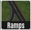

The RealHighway (RHW) system is a series of new highway networks added by the NAM, based on the reactivated stub of an unfinished transportation network (originally intended as a "DirtRoad" network) that Maxis left in the game. It is a variable width, variable height system with extensive modular interchange construction capabilities.
- Installing the RealHighways from the NAM Installer
- RealHighway Base and Override Networks
- Capacities and Speeds
- The Disconnector: An RealHighway-Safe Bulldozer
- Constructing Diagonals and Base Curves
- Connecting RealHighways via Intersections, Crossings and Interchanges
- On/Offramp (Ramp Interface) Basics
- Using FLEXRamps
- Building Draggable Ramp Interfaces (DRIs)
- Older Puzzle Piece Ramp Interfaces
- QuickChange: A Shortcut to Quicker Interchanges
- Tutorial: Simple Diamond Interchange with QuickChange
- Transitioning to Other Networks
- Wide-Radius and Multi-Radius Curves (MRCs)
- Using the FLEXFly (Flexible Flyover) System
- Fractional Angle RHW (FARHW)
- Cosmetic Pieces
- Bridges
- Tunnels
- A Note Regarding Neighbor Connections
- A Note About Specialized Crossings: SPUIs, Diverging Diamonds, and Volleyball Interchanges
- Network and FLEX Piece Capabilities
- List of Menu Items
- Region Transport View Support for the RealHighways
- Known Issues
- Information on Support and Development Updates
A mostly complete install (missing the upper elevated heights) of the RealHighway plugin is one of the features included by default if one selects the "Complete Standard Installation" or "Networks and Traffic Simulator" options in the NAM Installer. In Custom Installation, there is a whole section dedicated to the RealHighways and related optional features.
In Custom Installation, under the "NAM Networks and Network Expansions" section, selecting the "Real Highway Mod" box will install the mod in its entirety.
By clicking the "+" to expand the menu further, one can select which RealHighway heights they wish to have installed. Note that the L3 and L4 RealHighways are not installed by default, and must be explicitly selected in Custom Installation.
One can also expand out further to select specific widths at the given heights.

Additional options for the RealHighway system can be found under the "RealHighway Additional Options" section.
Real Highway Regional Transport View will install the optional RealHighway Regional Transport View Plugin, which will allow one's RealHighway networks to be displayed on the Regional Transport View. Note that one must activate a Data View in each city before saving in order for the RealHighways to appear on the map.
Single Median Barriers for Compact RHW Networks will give the C-type RHW networks a single median barrier, instead of a double barrier (the single option is actually selected by default).
Legacy Deprecated Height Transitions will install the older puzzle piece-based height transitions, which have (except for the Curved MIS transition, still under the button) all become outdated/deprecated with the addition of the new FLEXHeight transitions.
Euro textures for the RealHighways will be automatically installed if one selects one of the Euro road texture options. (Note that MandelSoft's older Euro texture options have been discontinued, as they are no longer being maintained.)
Additionally, under the "Additional Bridges" portion of the "Additional Features and Customization" section, by clicking the "+" to expand the Real Highway Bridges subsection, one can also select specifically which RHW bridges one wishes to install.
The RealHighway system avails itself of the only unfinished network stub left in the game, and adds a true base network, the 2-lane RealHighway (RHW-2), along with 33 override networks based upon it. With the exception of the Modular Interchange System (MIS) Ramp override network, the nomenclature used for RealHighway networks distinguishes the networks by the total number of lanes it would require to facilitate two-way traffic with the network. For instance, while each individual tile of the 4-lane RealHighway (RHW-4) may only carry 2 lanes going in one direction, full bidirectional traffic with the network would require 2 stretches of the network traveling in opposite directions, thereby resulting in a total of 4 lanes.
With some of the wider networks, the letters "S" or "C" may be added after the lane count designation (i.e. RHW-8S or RHW-6C). The "S" is an indication for "separable", meaning that the lanes carrying travel in the opposite direction may be separated by any distance. The "C" stands for "combined", and the center tile of the "C" override carries the median separating the two directions of traffic, thereby making it inseparable. While the smaller networks do not have "S" or "C" suffixes, the RHW-2 and RHW-3 may be thought of as small C-type networks, and the MIS Ramp and RHW-4 as S-type networks.
It is also possible to make ad hoc asymmetrical networks as well. For instance, one could create a 5-lane highway by using the RHW-4 on one side, and an RHW-6S on the other. The C-type networks, while not separable, also support this sort of functionality, and a dedicated starter exists for an "RHW-7C", which uses parts of the RHW-8C and RHW-6C for construction.
There are also multiple elevation levels for the RealHighway override networks as well, and a simple shorthand system of denoting each level. Ground-level networks, by virtue of having no elevation above the terrain, are deemed to be "Level 0", or L0. The RealHighway levels increment by 7.5 meters (7.5m) each level. Level 1 (L1) is at 7.5 meters, Level 2 (L2) at 15 meters, Level 3 (L3) at 22.5 meters, and Level 4 (L4) at 30 meters. All RealHighway widths have L1 and L2 elevation at their disposal, and the MIS Ramp, RHW-4, and RHW-6S all have the ability to reach L3 and L4. Double-decker (DD) setups also exist (presently, only in a configuration with 4 total lanes, the DDRHW-4), and the upper deck of the DDRHW is at L2, while the lower deck is at L1.
The base draggable network can be found under the RHW-2 button.
RHW-2 Network Button
The Starter Pieces can be found under the RHW Starters button.
RHW Starters Button
Network Widths
| Network | Full Name | Tile Width |
|---|---|---|
| RHW-2 | 2-lane RealHighway | 1 (Two-Way) |
| RHW-3 | 3-lane RealHighway | 1 (Two-Way) |
| MIS Ramp | Modular Interchange System Ramp | 1 (One-Way) 2 (Two-Way) |
| RHW-4 | 4-lane RealHighway | 1 (One-Way) 2 (Two-Way) |
| RHW-6S | 6-lane Separable RealHighway | 1* (One-Way) 2* (Two-Way) |
| RHW-8S | 8-lane Separable RealHighway | 2 (One-Way) 4 (Two-Way) |
| RHW-10S | 10-lane Separable RealHighway | 2 (One-Way) 4 (Two-Way) |
| RHW-6C | 6-lane Combined RealHighway | 3 (Two-Way) |
| RHW-8C | 8-lane Combined RealHighway | 3 (Two-Way) |
All widths of the RealHighway have access to L1 and L2 elevations, which are produced with separate starters. The MIS, RHW-4, and RHW-6S also have access to L3 and L4 elevations (only installed by Custom Installation), and as previously mentioned, the RHW-4 also has a double-decker form, the DDRHW-4 (decks at L1 and L2).
{kind=link}
All of these override networks can either be constructed by first placing a Starter Piece, then dragging the appropriate default network through the starter, at which point the draggable network should convert to match the starter. This process is shown below.
(Click for full resolution)
{kind=link}
In the case of multi-tile override networks, they are still based off default single-tile networks, mainly due to limitations with the game's default dual-tile networks, and lack of triple-tile networks. Simply use the same process for each tile in the starter to complete the network.
(Click for full resolution)
{kind=link}
Additionally, RHW Starter Pieces can be crossed by other RHW networks, allowing for maximally-stable highway-over-highway crossings.
{kind=link}
Zone Access Restrictions
The RealHighway family of networks is considered to be Highway-type by the game, and as such, this limits its ability to provide direct access to zones and buildings, as one would expect from a highway. This limitation is especially true of Residential (R) zones, which cannot be built at all along RHW networks, and attempting to have any zone type use RealHighway network frontage for access is not recommended. It is instead recommended that one downgrade to a non-highway network, such as the Road, One-Way Road, or one of the Network Widening Mod override networks if zone access is required.
The capacity of each network depends on the Traffic Plugin one has installed. Capacity is generally calculated on a per tile basis by the game, as the game cannot read the number of lanes.
All RHW networks are also highway-type networks, meaning that they do not allow full access to RCI Zones. The capacities for the five standard capacity levels of the NAM Traffic Plugin are listed below. Please note that these capacities listed are for the full width of the network, rather than the per-tile capacity.
Note that networks with crossover paths (i.e. the RHW-6C, RHW-8S, RHW-8C, and RHW-10S), and those that use a special workaround (the RHW-3, DDRHW-4, and RHW-6S) have a 25% boost on capacity over the normal per-tile figure for the base RHW network. This boost can only be applied once, which is why the DDRHW-4, despite having one more lane than the RHW-3, has the same capacity. A similar situation exists with the RHW-6C and RHW-8C, and the RHW-8S and RHW-10S.
Note that these figures also apply to all elevated versions of each network width, such that the L0 RHW-4 will have the same capacity as its L1, L2, L3, and L4 counterparts.
| RHW Network Type | Classic | Low | Medium | High | Ultra |
|---|---|---|---|---|---|
| RHW-2 (single-tile capacity) | 2700 | 6000 | 10000 | 15000 | 30000 |
| RHW-3 (single-tile capacity) | 3375 | 7500 | 12500 | 18750 | 37500 |
| MIS Ramps (single-tile capacity) | 2700 | 6000 | 10000 | 15000 | 30000 |
| RHW-4 (dual-tile capacity) | 5400 | 12000 | 20000 | 30000 | 60000 |
| DDRHW-4 (single-tile capacity) | 3375 | 7500 | 12500 | 18750 | 37500 |
| RHW-6S (dual-tile capacity) | 6750 | 15000 | 25000 | 37500 | 75000 |
| RHW-6C (triple-tile capacity) | 10125 | 22500 | 37500 | 56250 | 112500 |
| RHW-8S (quadruple-tile capacity) | 13500 | 30000 | 50000 | 75000 | 150000 |
| RHW-8C (triple-tile capacity) | 10125 | 22500 | 37500 | 56250 | 112500 |
| RHW-10S (quadruple-tile capacity) | 13500 | 30000 | 50000 | 75000 | 150000 |
The catalog speeds for the base RealHighway network are listed below. Note, however, that these catalog speeds are for 100% of catalog capacity, and that speeds on empty networks will exceed these figures by 30%, declining as the networks increase in volume per the Congestion vs. Speed Curve.
| Vehicle Type | Speed |
| Car | 150 |
| Bus* | 150 |
| Freight Truck | 130 |
| Pedestrian** | 10 |
*If one customizes the NAM Traffic Simulator using the Traffic Simulator Configuration Tool (TSCT), and selects the "Highway Bus Lanes" option, Bus speed on RealHighways will be boosted to 160.
**Pedestrians are only allowed on the L0 RHW-2 newtork.
Due to the vestigial remnants of the unfinished network stub, the base RealHighway network possesses an auto-connect functionality, similar to the way the Street network operates. This can make the network's behavior rather erratic when using the game's base Bulldoze tool, and may result in more being demolished than one intended, particularly when dealing with complicated interchanges constructed entirely from RealHighway components.
{kind=link}
To combat this issue, the RealHighway plugin comes with an alternative demolition tool, known as the Disconnector, which can be found under the Disconnector button on the Highways menu.
RHW Disconnector Button
Plopping the Disconnector over a single tile of RealHighway, including starter pieces, FLEX pieces, and intersections (but not puzzle pieces) will demolish only the tile directly under the cursor.
{kind=link}
The Disconnector is also used as part of some Pattern-Based Draggable setups used by the RealHighway plugin, particularly the Draggable Ramp Interfaces (DRIs). Additionally, it can be used in many situations with non-RHW networks as well.
With the networks that are single-tile (RHW-2, RHW-3), or have self-contained single-tile halves (MIS, RHW-4, RHW-6S), one can simply drag the network out as would be normally expected in order to produce the curves to go diagonal with the network. Aside from the L0 RHW-2, however, the shared-tile "double diagonal" setup cannot be built, and pairs of MIS, RHW-4, and/or RHW-6S carriageways must be separated, out into a split-tile setup.
For the wider RHW networks (the RHW-8S, RHW-10S, RHW-6C, and RHW-8C), the split-tile diagonal setup must be used.
{kind=link}
The default sharp 90-degree bends are only available with the RHW-2 and MIS Ramp networks (at all height levels), for the sake of realism. The MIS Ramp's version also overrides one "buffer tile" on either side of the bend itself, to produce a smoother result (one should take care not to impose upon these buffer tiles when building, as attempting to cram an intersection where they should go will simply destabilize the MIS Ramp override).
If one desires a smoother transition between orthogonal and diagonal, Wide-Radius Curves and Multi-Radius Curves provide a solution. Fractional Angle RealHighways (FARHW) are also available.
The RealHighway system has two ways of connecting and crossing other networks: At-Grade and Grade-Separated. The smaller RealHighway networks, including the RHW-2 (L0-L2), RHW-3 (L0 only), MIS (L0-L2), and RHW-4 (L0-L2), have the ability to intersect and cross other networks at the same height level. To build these crossings, simply drag the desired RealHighway network through or up to the crossing network to build the type of crossing you want, just as one would with any other draggable network in the game.
{kind=link}
For grade-separated crossings, where networks at different height levels--for instance, an L1 RHW-4 and the game's default Elevated Rail network (which is at L2)--follow the same exact process. All RealHighway networks at all height levels support grade-separated crossings.
{kind=link}
On/Offramp (Ramp Interface) Basics
Since not all RealHighway networks support At-Grade Intersections/Crossings, but all do support Grade-Separated Crossings, if one does wish to provide access to another road-type network, or another RealHighway (RealHighways cannot build interchanges with Maxis Highways), one must use exit and entrance ramps and build an interchange, in order to connect the two networks. Unlike the Maxis Elevated and Ground Highways, the RealHighway system does not include single-piece/pre-fabricated "plop" interchanges (though this will change in a future release). Instead, it relies on a Modular Interchange System (MIS), in which the user assembles the interchange out of multiple smaller components. While this approach is more complex, it allows for much greater control over the design of interchanges, and opens the door for considerable user creativity. Interchanges will also take up more space than the hyper-condensed, pre-fabricated ones for the Maxis Highways, as the RealHighway is designed more to allow for realistic-scale interchanges.
At the core of the RealHighway's interchange system are the Ramp Interfaces, which allow exit and entrance ramps to branch off from or merge into the through lanes, or "mainline", of a stretch of highway.
There are three possible ways to construct Ramp Interfaces:
- FLEXRamps, which are ploppable, generally slope-tolerant, and conform to match the surrounding network via overrides. These can be found under the "FLEXRamps" button.
- Draggable Ramp Interfaces (DRI), which are Pattern-Based Draggable items, built by dragging the RealHighway network tool according to a specific pattern. Like the FLEXRamps, these will conform to match the surrounding network via overrides.
- Puzzle Piece Ramp Interfaces, which are conventional static puzzle pieces, many of which have starters attached to their ends. As these are static ploppables, they will not
conform to the surrounding network, and one must select the specific puzzle piece for the desired network. This option is largely considered to be deprecated/outdated, with the
exception of the few more specialized setups that have yet to receive FLEXRamp or DRI treatments. These can be found under the "Ramps" button.

Note that there are some types of ramps that may only be possible through a certain construction method. FLEXRamps and DRIs are the preferred method for most ramp interfaces, and are the only option for most ramps involving elevated RealHighway networks. The puzzle piece method does presently contain a few specialized types that have not been made into FLEXRamp or DRI setups, however. A full listing of capabilities can be found here, and there is also a listing of all ploppable items (including FLEX and Puzzle Pieces). More details on constructing each type can be found below.
In order to use a ramp interface to connect a RealHighway to one's surface network, first, build the desired ramp interface. Then, from the end of the branch, simply drag the RealHighway network tool out from it, just like using a starter piece. The network will convert to match the ramp. From there, simply continue dragging in the desired pattern, adding curves and transitions as necessary, and intersect the surface street with an At-Grade Crossing. (Note that the Fractional Angle ramps, Types C and F, do not support dragging, and the appropriate Fractional Angle RealHighway (FARHW) puzzle pieces must be used instead.)
{kind=link}
In order to connect to another RealHighway, follow the same process, but instead of forming an At-Grade Crossing, simply connect the ramp into another Ramp Interface on the other RealHighway.
{kind=link}
There are a number of different types of Ramp Interfaces included in the plugin, but at their core, they serve one purpose--to connect RealHighway-based freeways/motorways to the surface streets, or other RealHighway-based freeways/motorways. There are two, sometimes three or even four parts to the name of each ramp interface type. These indicate the mainline width, the branch angle and width, as well as whether any of the branch lanes were "exit only" or "acceleration" lanes, added or subtracted from the mainline. Some more specialized ramp interfaces may append that fourth part, containing other information about the nature and location of the branch in relation to the mainline. The mainline portion will always indicate the width of the "top" portion of the ramp interface, where the mainline is guaranteed to be at its widest. In the case of FLEXRamps, since they are often shared by multiple networks, which override a base version, the mainline network is usually excluded from the in-game description. For the "type" designation, the number indicates the number of lanes included in the branch, while the letter indicates the branch angle and indicates whether the branch has any lanes that peel off (on exit) or join (on entrance) the mainline. The letter/number types translate as follows:
 Type A1 |
 Type B1 |
 Type C1 |
 Type D1 |
 Type E1 |
 Type F1 |
 Type A2 |
 Type B2 |
 Type C2 |
 Type D2 |
 Type E2 |
 Type F2 |
 Type A3 Not available |
 Type B3 Not available |
 Type C3 |
 Type D3 Not available |
 Type E3 Not available |
 Type F3 Not available |
- A1: Indicates a single-lane (MIS Ramp) branch off the mainline, with an orthogonal branch. No lanes peel off the mainline.
- B1: Indicates a single-lane (MIS Ramp) branch off the mainline, with a diagonal branch. No lanes peel off the mainline.
- C1: Indicates a single-lane (MIS Ramp) branch off the mainline, with a fractional angle (18.4-degree) branch. No lanes peel off the mainline.
- D1: Indicates a single-lane (MIS Ramp) branch off the mainline, with an orthogonal branch. The branch is formed from one lane of the mainline, and the mainline has one fewer lane at the bottom.
- E1: Indicates a single-lane (MIS Ramp) branch off the mainline, with a diagonal branch. The branch is formed from one lane of the mainline, and the mainline has one fewer lane at the bottom.
- F1: Indicates a single-lane (MIS Ramp) branch off the mainline, splitting at a fractional angle (18.4-degree) from the mainline. The branch is formed from one lane of the mainline, and the mainline has one fewer lane at the bottom.
- A2: Indicates a dual-lane (RHW-4) branch off the mainline, with an orthogonal branch. One of the two lanes on the branch is from the mainline, and the mainline has one fewer lane at the bottom.
- B2: Indicates a dual-lane (RHW-4) branch off the mainline, with a diagonal branch. One of the two lanes on the branch is from the mainline, and the mainline has one fewer lane at the bottom.
- C2: Indicates a dual-lane (RHW-4) branch off the mainline, with a fractional angle (18.4-degree) branch. One of the two lanes on the branch is from the mainline, and the mainline has one fewer lane at the bottom.
- D2: Indicates a dual-lane (RHW-4) branch off the mainline, with an orthogonal branch. Both lanes on the branch are from the mainline, and the mainline has two fewer lanes at the bottom.
- E2: Indicates a dual-lane (RHW-4) branch off the mainline, with a diagonal branch. Both lanes on the branch are from the mainline, and the mainline has two fewer lanes at the bottom.
- F2: Indicates a dual-lane (RHW-4) branch off the mainline, with a fractional angle (18.4-degree) branch. Both lanes on the branch are from the mainline, and the mainline has two fewer lanes at the bottom.
- A3: Indicates a triple-lane (RHW-6S) branch off the mainline, with an orthogonal branch. Two of the three lanes on the branch is from the mainline, and the mainline has two fewer lanes at the bottom. There are currently no Type A3 ramps available.
- B3: Indicates a triple-lane (RHW-6S) branch off the mainline, with a diagonal branch. Two of the three lanes on the branch is from the mainline, and the mainline has two fewer lanes at the bottom. There are currently no Type B3 ramps available.
- C3: Indicates a triple-lane (RHW-6S) branch off the mainline, with a fractional angle (18.4-degree) branch. Two of the three lanes on the branch is from the mainline, and the mainline has two fewer lanes at the bottom.
- D3: Indicates a triple-lane (RHW-6S) branch off the mainline, with an orthogonal branch. All three lanes on the branch are from the mainline, and the mainline has three fewer lanes at the bottom. There are currently no Type D3 ramps available.
- E3: Indicates a triple-lane (RHW-6S) branch off the mainline, with a diagonal branch. All three lanes on the branch are from the mainline, and the mainline has three fewer lanes at the bottom. There are currently no Type E3 ramps available.
- F3: Indicates a triple-lane (RHW-6S) branch off the mainline, with a fractional angle (18.4-degree) branch. All three lanes on the branch are from the mainline, and the mainline has three fewer lanes at the bottom. There are currently no Type F3 ramps available.
Below is a list of the modifiers:
- Inside: This designation is seen on ramps from one-way RHW networks, and indicates that the ramp branch is on the inside (left exit/entrance in countries with right-hand traffic, right exit/entrance for those with left-hand traffic), rather than the expected outside.
- Wide: This designation indicates that the ramp branch has a larger separation than the standard version of that type, and is most commonly applied to A1 and A2 ramps.
- Wye: This designation indicates that both the branch and the mainline (often when the mainline is of the same width as the branch) both diverge from the path of the mainline at the top in a symmetrical fashion, forming a wishbone or Y-shape.
- Shift: This is an indication that the mainline undergoes curvature in the midst of the ramp. This occurs when the mainline shifts from an S-type network to a C-type network.
- Dual: This is an indication that there are two ramp branches on the ramp interface. This is most commonly seen with the bidirectional networks (RHW-2, RHW-3, and Double-Decker RHWs), or in conjunction with Shift.
- Folded: This is an indication that there are two ramp branches that curve off at 90-degree angles, in opposite directions. There is only one Folded ramp interface, the RHW-2 D1 Folded.
- Diagonal: This designation indicates that the mainline is diagonal rather than orthogonal. The branch angles are handled the same as if the ramp were orthogonal (i.e. an orthogonal ramp branch off a diagonal ramp interface would still be an A or D-type ramp of some sort).
- FA: This designation indicates that the mainline is at a fractional angle rather than orthogonal. The branch angles are handled the same as if the ramp were orthogonal (i.e. an orthogonal ramp branch off an FA ramp interface would still be an A or D-type ramp of some sort).
Using FLEXRamps
FLEXRamps are ploppable FLEX on/offramp pieces, and are perhaps the easiest to navigate option to branch ramps off one's RealHighway system. The FLEXRamp pieces may be found under the FLEXRamps button on the Highways menu. To use the FLEXRamps, simply find the desired ramp design, and plop it down. Each FLEXRamp has a default network, but will convert to match if one drags another RHW override network through it, or plops the ramp over an existing stretch of an RHW override network. The process is shown below (the process of overriding the base setup of the Draggable Ramp Interfaces is identical):
{kind=link}
Due to the use of special network flags, FLEXRamps are relatively slope-tolerant, particularly compared to other ramp interface options.
Below is a list of the default networks for each FLEXRamp:
| Ramp | Default Network |
|---|---|
| Type A1 | RHW-2 |
| Type B1 | RHW-2 |
| Type D1 | RHW-4 |
| Type E1 | RHW-4 |
| Type A2 | RHW-6S |
| Type B2 | RHW-6S |
| Type D2 | RHW-6S |
| Type E2 | RHW-6S |
| Type A1-Diagonal | RHW-2 |
| Type B1-Diagonal | RHW-2 |
| Type A1-Inside | MIS Ramp |
| Type B1-Inside | MIS Ramp |
Building Draggable Ramp Interfaces (DRIs)
Draggable Ramp Interfaces, or DRIs, are ramp interfaces that are constructed as Pattern-Based Draggables, using the RealHighway network. With the exception of a very few specialized setups, virtually every RHW ramp interface setup can be built through draggable means, and at present, there are some ramps that are only possible as DRIs. Each ramp interface type supported by the system has a special drag pattern, which, when constructed, will subsequently convert into the appropriate on/offramp.
The below Table of DRI Patterns shows the exit ramp (entrance ramp for Left-Hand Traffic) setup. The corresponding entrance (or exit in Left-Hand Traffic) can be constructed by using the mirror image of these patterns. The process for overriding a FLEXRamp to have another RHW network as a mainline is identical to that of the FLEXRamps, as shown above. Elevated ramp interfaces can be constructed by dragging the appropriate elevated RHW network (L1-L4) or double-decker RHW through the DRI, which, provided the particular setup is supported by that network, will elevate the ramp. Many setups for narrower networks can be transformed into corresponding versions for wider networks by using the same method. This conversion is most reliable if the overriding network is dragged into the top end of the mainline.
Since the drag patterns involve the creation of intersections, the point where the actual mainline/branch split occurs will result in flat terrain, but the rest of a DRI is not limited in this regard.
The table below shows all of the basic drag patterns for the DRIs:
(Click for full resolution)

Older Puzzle Piece Ramp Interfaces
A set of Puzzle Piece Ramp Interfaces also exists. While it was the original method for constructing ramp interfaces, it has largely become a deprecated method, aside from the few setups not covered otherwise, due to the demands it places on the menu system. The Puzzle Piece Ramp Interfaces exist under two buttons, the Puzzle Piece Ramp Interfaces button, and the Fractional Angle Ramp Interfaces button (which contains all the Type C and Type F ramps). One must find the precise puzzle piece needed for the particular setup on the desired network, and place it. As static puzzle pieces, these ramp interfaces cannot carry overrides.
Most (but not all) of the Puzzle Piece Ramp Interfaces have starters attached on their mainline approaches and branches, which does allow one to use them without having to place additional starters, but the presence of these starters also severely limits their slope tolerance. As such, they can generally only be used on flat terrain, or they will end up flattening parts of slopes. If the puzzle-based interface does not have a starter stub on its ends (as it the case with most of the Fractional Angle types), one must place it after constructing the base network, and a portion of the ramp.
QuickChange: A Shortcut to Quicker Interchanges
In addition to the ramp interfaces, a series of "shortcuts" exist, in the form of the FLEX-based QuickChange (QC) pieces. The QuickChanges include a base ramp interface (Type A1 by default) with a height transition already attached, and provide quadrants for standard diamond and parclo (partial-cloverleaf) interchanges. To build a QuickChange setup, simply place the desired setup, and as needed, drag an override network through the mainline portion (or plop it over an existing override network), after which point it will change to match.
The QuickChange pieces may be found under the QuickChange button on the Highways menu.
QuickChange Button
QuickChange still operates with the RealHighway's modular design philosophy in mind, and as such, is possible to swap in a different ramp interface type for the default Type A1 (such as a Type D1), simply by plopping the other ramp interface over the existing one.
{kind=link}
Tutorial: Simple Diamond Interchange with QuickChange
To build a diamond interchange with the QuickChanges, in which the L1 RHW-4 crosses over a Road, first begin with the L1 RHW-4 Starter Pieces, and drag out with the RealHighway network tool to continue the overrides. Then, drag the Road underneath. Following that, place four QuickChange L1 RHW Partial Diamond pieces encircling the Road. The L1 RHW-2 base mainline of the QuickChanges should covert to match the L1 RHW-4 (if L1 RHW-2 lingers, simply click around the vicinity of the unconverted sections with the RealHighway network tool to get them to cooperate). After this, use the RealHighway network tool to drag between the height transitions, right through the Road. This will form the intersections between the ramps and the Road, thereby completing the interchange.
{kind=link}
This process can easily be adapted to other RHW networks, other surface street options (such as Avenues or Network Widening Mod networks), and to variants where the RHW is at ground level, and the surface street crosses over using one of the Draggable Elevated Road Viaducts.
There are three types of transitions that exist in the RealHighway plugin: Height Transitions, Width Transitions, and Other Network Transitions. The first two cover cases between two RealHighway networks, while the latter covers transitions to non-RealHighway networks, i.e. Maxis and Network Widening Mod (NWM) networks.
There are two methods of constructing Height Transitions, both of which involve ploppable items: the FLEX-based FLEXHeight system (found under the "FLEXHeight" button), and the conventional puzzle piece approach (found under the "Height Transitions" [Ht. Trans.] button). The FLEXHeight system is the more full-featured of the two, and there is only one situation (a 90-degree curved MIS transition) that presently requires a puzzle piece.
RHW FLEXHeight Button
RHW Height Transition Puzzle Pieces Button (Only installed if "Legacy Height Transitions" option is selected.)
There are two subtypes of Height Transitions: "Ramp-Style" and "On-Slope". The former is designed for use on (relatively) level ground, and uses a multi-tile rise to get the RealHighway up to the desired height, and presently only exists in an orthogonal version. The latter is for use on an embankment, and exists in an orthogonal version, and a (limited) diagonal form. In order to ensure proper placement on the OnSlope transitions, use of the NAM's Hole Diggers and Raisers is recommended.
{kind=link}
The standard FLEXHeight transitions default to the base RHW-2 network (producing an elevated version of the RHW-2, either L1 or L2 out the other end). If wishing to simply use the RHW-2 network, plopping the piece down is all that is needed. (The 180-degree MIS Ramp transition is MIS-only, however, and dragging an RHW-2 into it will produce either an L0 or L1 MIS Ramp, depending on the end.) If using an On-Slope version, only drag the RHW network up to the edge of the transition, NOT through, in order to preserve the embankment.
Ramp-Style Usage
{kind=link}
On-Slope Usage
To override the base RHW-2 configuration of the FLEXHeight transitions, either Ramp-Style or On-Slope, simply drag the desired override network into either end, and it will convert to match. If any tiles refuse to convert, simply click over the first point where the override stops complying, and it should convert. Placing starters on both sides of the transition ensures maximum stability.
{kind=link}
If using a multi-tile network, simply place multiple FLEXHeight transitions adjacent to one another, and drag each tile of the multi-tile network into the ends of the transition.
{kind=link}
It is also possible to transition between two different elevations (i.e. L1 and L2 instead of L0 and L1), simply by plugging the appropriate overrides into the ends.
{kind=link}
Additionally, 3-Level and 4-Level Ramp-Style transitions can be built by overlapping the ends of multiple FLEXHeight 1-Level or 2-Level pieces. Note that this can only be done with networks that support the L3 and L4 elevation (the RHW-4, MIS Ramp, and RHW-6S).
{kind=link}
The Width Transitions currently only exist in conventional puzzle piece form, and are all found under the "Width Transitions" button.
 RHW Width Transitions Button
RHW Width Transitions Button
To build a width transition, simply find the desired puzzle piece by using TAB/Shift-TAB to cycle through the options, and place it. Most Width Transitions already have starters on the ends--note, however, that this fact significantly limits the slope tolerance of these transitions.
{kind=link}
Transitions to non-RealHighway networks are accomplished simply by dragging the RealHighway and non-RealHighway network to meet. If the setup is supported, the transition will override to match the involved networks.
{kind=link}
A full list of supported transition setups can be found here, and a listing of items under the transition-related menu buttons can be found here.
The default draggable curves for the RealHighway networks are not exactly the smoothest or most realistic. The FLEX-based and draggable Multi-Radius Curves (MRCs) and the Puzzle Piece-based Wide-Radius Curves (WRCs) allow one to change that, by providing smoother curves with wider radii than the defaults. Both the FLEX and puzzle pieces can be found under the RealHighway Curves button on the Highways menu.
RHW Curves Button
Multi-Radius Curves (MRCs) [FLEX/Draggable]
The Multi-Radius Curves are a series of wider-radius curves that are constructed through either draggable means or with FLEX pieces. There are five radii total included in the MRC system--R1, R2, R3, R4, and R5. The higher the number, the wider the radius (i.e. R2 has a wider radius than R1). As with many items, they default to the RHW-2, but they can support up to the RHW-6S width--more details as to precisely what is supported can be found here.
{kind=link}
R1 curves, also known as "Mini-Curves", are constructed by draggable means, and can be easily constructed with a simple additional motion when building the default network curves. Simply drag in a straight, orthogonal motion through the entire default curve. Afterward, a smoother curve will appear. Alternatively, one can simply try to drag the curve to the diagonal one tile before an end stub, which will also trigger the R1 curve.
{kind=link}
Note that with the RHW-6S, due to the overhang, a "bite" may appear to be missing from some curve setups. Simply click in the area of the missing "bite" with the RealHighway network tool to fill it.
{kind=link}
R2 45 curves may be constructed either via draggable means or FLEX pieces. For the draggable R2 setup, drag the default curve as usual, and then build a 90 bend on the inside of the curve, at which point it should convert. To build the FLEX piece, simply select it from the menu and place it. The FLEX pieces--which include a 90 variant in addition to the 45 version--all default to the base L0 RHW-2 network, but dragging an override network into a FLEX MRC piece, or plopping one over top of an existing stretch of override network will cause it to convert to match, provided the network is supported for that particular setup.
{kind=link}
Note also that the orthogonal ends of R2 curves can, in fact, overlap, allowing for one to create a smooth composite curve, which can be very useful in building aesthetically-pleasing interchange ramps.
{kind=link}
The R3, R4, and R5 radii only exist as FLEX pieces, and can be constructed the same way as the R2 FLEX piece. They do not, however, support the overlap/composite curve functionality of the R2 curves.
The Multi-Radius Curves do not support the creation of intersections or crossings at any point in the curve, and attempting to build one will destabilize the curve. The FLEXFly system does allow for an equivalent functionality, however.
Wide-Radius Curves (WRCs) [Puzzle]
In addition to the MRCs, a series of puzzle piece-based Wide-Radius Curves (WRCs) also exists, which at least partially cover all ground-level RealHighway networks. S-Curves exist for all networks, 45 curves exist for all but the RHW-6C and 8C, and 90 curves (in two radii--small and large) exist for the RHW-2 and MIS Ramps.
The Wide-Radius Curve puzzle pieces do NOT have starters on their ends, unlike many other older puzzle-based RealHighway items, and being puzzle-based, do not support overrides. As such, they generally must be built on top of an existing stretch of a RealHighway network. The network must already exist up to the point at which the curve piece begins. With S-Curves/Lane Shifts, the presence of base network stubs may allow one to simply place starters oneself on either end.
{kind=link}
The S-Curves for the RHW-6C and RHW-8C are built in a modular fashion as well, to allow support for the asymmetrical "RHW-7C" setup. Simply build the full curve one half at a time.

It is possible to also build larger composite 90 turns with the single-tile networks, using the RHW Filler Pieces, but this functionality does not exist for the RHW-8S, 10S, 6C, or 8C.
The FLEXFly (Flexible Flyover) pieces are FLEX-based curved flyover ramps, which can be crossed under or over by almost every RealHighway network (except for the L0 RHW-2, for the purposes of stability). They can be found under the FLEXFly button on the Highways menu.
RHW FLEXFly Button
The FLEXFly pieces come in two angles--90 and 45--and both single-lane/MIS Ramp-based or dual-lane/RHW-4-based versions are available, at height levels from L0 to L2. Their curve radii are equivalent to the R2 Multi-Radius Curves.
To use a FLEXFly piece, first place the desired setup. Each FLEXFly will allow draggable orthogonal crossings at any point in the curve, provided the crossing network is at different height level than the FLEXFly itself. To create these crossings, just drag the network under/over the FLEXFly. To continue the flyover ramp, just drag out from the ends of the FLEXFly, just as if it were a starter piece, or connect it to other RealHighway-related items (like height transitions) as desired.
{kind=link}
Note that FLEXFly pieces can only support a single crossing network at any given point. It is also not possible to have a FLEXFly piece cross over another FLEXFly piece--the result of this will be a blank tile at the point where the two collide. Additionally, FLEXFly pieces do not support the overlap/composite technique of the R2 Multi-Radius Curves.
{kind=link}
One can also further their "grid-busting" efforts with the RealHighway system with the use of the Fractional Angle RealHighway (FARHW) Puzzle Pieces. The FARHW pieces allow one to build RealHighways at angles other than orthogonal and diagonal--currently, only 18.4/71.6 (or "FA-3", as it is known in Fractional Angle Network nomenclature).
{kind=link}
The FARHW pieces exist under three different buttons--the main FARHW pieces button, which contains the base fractional angle network pieces, and curves to connect to orthogonal and diagonal networks, the FARHW Ramp Interfaces button, which contain ramp interfaces involving FARHW connections (including the Type C1, C2, F1, F2, and C3 ramps), and the FARHW Intersections and Transitions button, which contains intersection pieces with FARHW approaches, as well as width transitions between different FARHW widths.
FARHW Button
FARHW Ramp Interfaces Button
FARHW Intersections and Transitions Button
In building stretches of FARHW, make sure that the line colors (or shoulder widths, if dealing with Euro textures) line up properly.
{kind=link}
Note that, with the exception of the FARHW Ramp Interfaces, none of the other FARHW pieces have starters on their ends, much like the Wide-Radius Curves, so one must be sure to place the orthogonal or diagonal ends of curves over an existing stretch of network.
The Cosmetic Pieces are a set of puzzle pieces that are designed to allow one to exercise finer control of the look of their RealHighways, particularly with lane markings, such as auxiliary lane and HOV lane markings. Due to their sheer number (166 total at present), the Cosmetic Pieces are divided under four separate buttons, one for each tile width possibility (1-tile, 2-tile, and 3-tile), and one for cosmetic transitions. All four buttons can be found under the Highways menu.
RHW 1-Tile Cosmetic Pieces Button
RHW 2-Tile Cosmetic Pieces Button
RHW 3-Tile Cosmetic Pieces Button
RHW Cosmetic Transitions Button
{kind=link}
To use the Cosmetic Pieces, simply find the desired piece and place it. Please note that as puzzle pieces, the Cosmetic Pieces cannot accept or pass along overrides, albeit they can be placed over starter pieces in many situations.
The NAM does include bridges for various RealHighway networks. However, it is worth noting that there are some special caveats, due to a hardcoded restriction in the game's terrain engine, which prevents bridges from being built without at least a one-tile separation between them:
- Bridges involving the wider S-type networks (RHW-8S and RHW-10S) must be built with the Maxis Ground Highway tool instead of the RealHighway tool.
- Bridges involving the wider C-type networks (RHW-6C and RHW-8C) are not possible.
- There are bridges available for adjacent RHW-4 and RHW-6S situations, also built with the Maxis Ground Highway tool.
- Bridges for RealHighway networks with separate carriageways (i.e. the MIS Ramps, RHW-4, RHW-6S, RHW-8S, RHW-10S, and DDRHW-4) will have their traffic flow determined by the way in which the base network is dragged. Take note of the preview models to ensure you have built the bridge in the correct direction.
For the bridges that use the Maxis Highway as a base, there are overrides in place to seamlessly connect with the otherwise RealHighway-based networks. In order to create this smooth transition, ensure that only the end stub of the Maxis Highway network is showing at each end of the bridge. Then, simply drag each tile of the RealHighway override network into the Maxis Highway stubs. They will convert to match the RealHighway. This process is shown below.

Below is a list of all the bridges presently available. Maxis Ground Highway-based bridges will be marked with a bracketed note. (Click images for full resolution.)
RHW-2 Bridges
- Small Steel Arch RHW-2 Bridge
- Concrete Girder RHW-2 Bridge
- Plain RHW-2 Bridge
- Elevated (L2) Plain RHW-2 Bridge
{kind=link}
RHW-3 Bridges
None at present
MIS Ramp Bridges
- Plain MIS Bridge
- Elevated (L2) Plain MIS Bridge
{kind=link}
RHW-4 Bridges
- Steel Girder RHW-4 Bridge
- Concrete Box Girder RHW-4 Bridge
- Plain RHW-4 Bridge
- Elevated (L2) Plain RHW-4 Bridge
- Dual Steel Girder RHW-4 Bridge (1) [Maxis Ground Highway-based]
- Dual Steel Girder RHW-4 Bridge (2) [Maxis Ground Highway-based]
- Plain Compact Suspension RHW-4 Bridge [Maxis Ground Highway-based]
- Large Steel Arch Compact RHW-4 Bridge [Maxis Ground Highway-based]
{kind=link}
{kind=link}
{kind=link}
{kind=link}
RHW-6S Bridges
- Concrete Box Girder RHW-6S Bridge
- Compact Concrete Box Girder RHW-6S Bridge [Maxis Ground Highway-based]
- Compact Regular RHW-6S Bridge [Maxis Ground Highway-based]
- Compact Cable-Stayed RHW-6S Bridge [Maxis Ground Highway-based]
- Compact Steel Arch RHW-6S Bridge [Maxis Ground Highway-based]
{kind=link}
{kind=link}
{kind=link}
RHW-8S Bridges
- Undertruss RHW-8S Bridge [Maxis Ground Highway-based]
{kind=link}
RHW-10S Bridges
- Large Concrete Arch RHW-10S Bridge [Maxis Ground Highway-based]
- Cable Stayed RHW-10S Bridge [Maxis Ground Highway-based]

{kind=link}
DDRHW-4 Bridges
- Plain DDRHW-4 Bridge
{kind=link}
RHW-6C Bridges
Not possible due to terrain engine restriction.
RHW-8C Bridges
Not possible due to terrain engine restriction.
The base RealHighway network does NOT support tunnels. While certain slope settings may permit a tunnel to appear, it will be completely non-functional, due to hardcoded limitations that prevent traffic from using it. There is no known solution to this limitation at present. The only possible workaround at present is to transition to another network that does support tunnels.
While the single-tile, two-way RealHighway networks (the RHW-2, RHW-3, and DDRHW-4) can form functioning neighbor connections the standard way, attempting to do this with any other RealHighway network will result in only freight trucks being able to use the connection. This is because the game cannot handle one-way neighbor connections, as would be required with the RHW-4, MIS, and the various wider networks. As a result, special Neighbor Connector (NC) pieces are required, in order to provide proper functionality for these override networks. These puzzle pieces can be found under the RHW Neighbor Connector Pieces button.
RHW Neighbor Connector Pieces Button
There are two types of pieces involved in RHW Neighbor Connections: Network Pieces and Invisible Loop Connectors.
To build the Neighbor Connection, build a standard Neighbor Connection through the normal draggable means with the network you wish to use.
Please note that no matter how you drag the RHW to the edge, the default yellow Neighbor Connection will always be facing the same way, unlike Avenue or Maxis Highway Neighbor Connections. (There is no way to change this, nor any need to do so.)
Then find the RHW Neighbor Connector Pieces button, and TAB through to find and place the appropriate Network Piece over each network tile that will be part of the Neighbor Connection, on the the game's default yellow Neighbor Connection arrows, simply lining up the white/yellow lines with your highway as appropriate:
If the two sides of your RHW are separated by one or more tiles, place the Invisible Loop Connectors in the median area right next to the edge of the city tile, filling the gap. The Invisible Loop Connectors, which look like a blue arrow with an "N" inside, when placed, will show up invisible, but you can easily locate them by hovering a query tool over top, which will cause an otherwise invisible "ghost model" with the blue "N" arrow to appear:
Do not place the Invisible Loop Connectors directly over top of you network, as this is not what they were intended for and they will actually prevent your system from working. Due to how the pieces have to be set up, it is also possible you will see "spider cars" going down the edge of your city tile, and the paths will be draped over the edge of the city tile.
For "Combined" ("C-type") networks, such as the RHW-6C and 8C, simply place the appropriate Neighbor Connector piece over top of the network at the edge of the city tile.
In order for the connection to work properly, this process must be repeated identically in the neighboring city tile, and the traffic simulation must be given some time to run in both involved city tiles in order for the game to recognize that there is a valid connection.
NOTE: Most of the elevated RealHighway override networks do not currently support Neighbor Connections. This functionality will be added in a future release, when the Neighbor Connection functionality is converted to use FLEX pieces for the network-specific portions.
The RealHighway system includes the ability to recreate three oft-requested interchange designs: the Single-Point Urban Interchange (SPUI), the Diverging Diamond Interchange (DDI), and the Volleyball Interchange. These are "advanced" features of the plugin, and it is recommended that you are already comfortable with the RealHighways, the NAM Elevated Viaducts and the either the FLEX Turn Lanes (FTL) or Turn Lane Extension Pieces (TuLEPs) before trying to build SPUIs or DDIs.
The SPUI and DDI setups can be found under the RHW/Avenue Interface button on the Roads menu, while the Volleyball pieces can be found under the old puzzle-based Ramps button on the Highways menu.
RHW/Avenue Interface button Connector Pieces Button (contains SPUI and DDI items)
RHW Puzzle Piece Ramps Button (contains Volleyball pieces)
Single-Point Urban Interchange (SPUI)
The Single-Point Urban Interchange, or more commonly, SPUI, is a type of high-capacity, grade-separated interchange, introduced in February 1974 in Clearwater, Florida by engineer Wallace Hawkes. While conventional diamond interchanges usually involve two separate intersections to provide access between a surface street and a highway, the SPUI combines the two intersections into a single intersection (usually with slip lanes), improving traffic flow. The RealHighway's SPUI functionality is provided via the FlexSPUI piece, found under the RHW x Avenue pieces button on the Roads menu. As the name implies, this SPUI piece is a FLEX piece, which allows for the construction of a SPUI between several different RealHighway networks with several different configurations, including Elevated SPUIs.
NOTE: FlexSPUI has not yet been fully upgraded to take advantage of the new height levels and coding improvements added to the RealHighway system as part of the Project 57 initiative in 2013, and the current version is in a somewhat deprecated state. A future release of the NAM will incorporate a new, improved version of FlexSPUI, though the advice here will still remain at least somewhat applicable.
In order to build a SPUI, place the FlexSPUI piece--it looks like half of a SPUI.
To complete the basic intersection, you'll need to plop another half of a SPUI. This half can be plopped next to the first one:
Or you can put a small gap between them and fill it in with an Avenue:

In either case, make sure to bulldoze the "construction site handles" on the piece. The ramp connections on the sides allow RHW-4 to be dragged out from them:
You can simply drag an elevated RHW over top of the FlexSPUI, like so:
In order to connect the Avenue end, use the either the Avenue Type 110 FLEX Turn Lanes or Turn Lane Extension Pieces:
It is also possible to elevate the FlexSPUI. Simply place an L2 connection (such as a transition) next to the ramp connection on the SPUI (NOTE: L1 did not exist when FlexSPUI was created). Most of one half of it will become elevated--simply click on the non-elevated part with the RHW network tool and it will raise up:
The overrides are most stable on the "incoming" part of the ramp connection ("outgoing" in Left-Hand Drive)--this shows the rest of the SPUI becoming elevated:
You can simply drag a ground-level RHW underneath the Elevated FlexSPUI, much as you dragged the Elevated RHW over the Ground FlexSPUI:
In order to connect the Avenue end, you will need to use the Avenue Type A On-Slope TuLEP. The NAM's Hole Digger and Raiser feature is highly recommended in order to get the embankment to the proper elevation.
For a video demonstration of FlexSPUI construction, please see Tarkus' YouTube videos on Ground FlexSPUI and Elevated FlexSPUI.
Diverging Diamond Interchange (DDI)
The Diverging Diamond Interchange (DDI), sometimes also called "Crossing Diamond", is an interchange that originated in France, but has recently caught on with North American highway engineers, through the work of American traffic engineer Gilbert Chlewicki. The Missouri Department of Transportation (MODOT) opened the first in the United States in Springfield on June 21, 2009. Since then, many more have opened up across the world. The DDI involves having traffic cross onto the "wrong" side of the road, which allows left turn movements flow more smoothly and traffic onto (and sometimes off) the freeway to go unsignalized, with only the through movements on the surface street requiring signalization.
The RHW includes a special puzzle piece allowing for the construction of a DDI with an Avenue, which, like the FlexSPUI, is found under the RHW x Avenue button on the Roads menu. To build a DDI, place the special DDI intersection pieces on either side of your RHW, and connect Avenues into the appropriate ends of the pieces. Use One-Way Roads and/or the draggable or puzzle piece-based Elevated One-Way Road Viaducts (for an elevated DDI) to build the "wrong side" traffic sections between the DDI intersection pieces. The connections to the RHW end are made via RHW-4.
Volleyball Interchange
The Volleyball Interchange, also commonly known as a Three-Level Diamond, or Split-Level Diamond, is a three-level interchange, in which all turning motions are handled by at-grade intersections on a separate height level from through traffic.
Under the old Puzzle Piece Ramp Interfaces button on the Highways menu, one can find a series of "Specialized Crossing Pieces" (SCPs) to handle Volleyball Interchange intersections. To use them, simply place them down, and place starter pieces between each intersection to connect them.
{kind=link}
Capabilities of Each Network
KEY
| Yes | This particular feature can be constructed, with minimal (if any) limitations. |
| Partial Support | This particular feature can be constructed, but not in all instances. Details will be given as to what is/is not possible. Partial support may be for intentional design reasons (such as realism or general unfeasibility), or simply because the feature has not been fully developed. |
| Limited Support | This particular feature can be constructed, but only in extremely limited circumstances. Instances that are possible may be listed, insofar as it is possible. Use at your own risk. |
| No Support | This particular feature cannot be constructed. This restriction could be for intentional design reasons (such as realism, or general unfeasibility), or simply because it has not yet been developed. |
ADDITIONAL NOTES
OxO: OxO stands for "orthogonal x orthogonal", and refers to a situation where both networks are orthogonal (in a straight line) along the game's grid, intersecting perpendicularly (at 90 angles at all corners)
OxD: OxD stands for "orthogonal x diagonal", and refers to a situation where the given network is orthogonal (in a straight line) along the game's grid, and the cross network is diagonal (running at a 45 angle).
DxO: DxO stands for "diagonal x orthogonal", and refers to a situation where the base network is diagonal (running at a 45 angle), and the cross network is orthogonal (in a straight line) along the game's grid.
DxD: DxD stands for "diagonal x diagonal", and refers to a situation where both networks are diagonal (running at a 45 angle) along the game's grid, intersecting perpendicularly (at 90 angles at all corners)
Available Height Levels
| Width | L0 | L1 | L2 | L3 | L4 | DD |
|---|---|---|---|---|---|---|
| RHW-2 | Yes | Yes | Yes | No | No | No |
| RHW-3 | Yes | Yes | Yes | No | No | No |
| MIS Ramps | Yes | Yes | Yes | Yes | Yes | No |
| RHW-4 | Yes | Yes | Yes | Yes | Yes | Yes |
| RHW-6S | Yes | Yes | Yes | Yes | Yes | No |
| RHW-6C | Yes | Yes | Yes | No | No | No |
| RHW-8S | Yes | Yes | Yes | No | No | No |
| RHW-8C | Yes | Yes | Yes | No | No | No |
| RHW-10S | Yes | Yes | Yes | No | No | No |
Base Network Features
| NETWORK | Base Orthogonals | Base Diagonals | Ortho 90 Bend | Ortho S-Curve | Diag 90 "Boomerang" Bend | Diag S-Curve |
|---|---|---|---|---|---|---|
| L0 RHW-2 | Yes | Yes | Yes | Yes | Yes | Yes |
| L0 RHW-3 | Yes | Yes | No | Yes | No | No |
| L0 MIS Ramp | Yes | Yes | Yes | Yes | Yes | Yes |
| L0 RHW-4 | Yes | Yes | No | Yes | No | No |
| L0 RHW-6S | Yes | Yes | No | Yes | No | No |
| L0 RHW-8S | Yes | Yes | No | Yes | No | No |
| L0 RHW-10S | Yes | Yes | No | Yes | No | No |
| L0 RHW-6C | Yes | Yes | No | Yes | No | No |
| L0 RHW-8C | Yes | Yes | No | Yes | No | No |
| L1-L2 RHW-2 | Yes | Yes | Yes | Yes | Yes | Yes |
| L1-L2 RHW-3 | Yes | Yes | No | Yes | No | No |
| L1-L4 MIS Ramp | Yes | Yes | Yes | Yes | Yes | Yes |
| L1-L4 RHW-4 | Yes | Yes | No | Yes | No | No |
| L1-L4 RHW-6S | Yes | Yes | No | Yes | No | No |
| L1-L2 RHW-8S | Yes | Yes | No | Yes | No | No |
| L1-L2 RHW-10S | Yes | Yes | No | Yes | No | No |
| L1-L2 RHW-6C | Yes | Yes | No | Yes | No | No |
| L1-L2 RHW-8C | Yes | Yes | No | Yes | No | No |
| DD RHW-4 | Yes | Yes | No | Yes | No | No |
Intersections/Crossings
| Network | Draggable At-Grade Intersections (RD/OWR/AVE/NWM/Rail/GLR) | Draggable Crossings (Elevated Rail/Monorail/HSR/RD-OWR-AVE-Rail Viaducts) | Ramp Interfaces | Draggable Transitions to Non-RHW Networks | OxO with RHWs at Other Heights | OxD/DxO with RHWs at Other Heights | DxD with RHWs at Other Heights | Bridges over Water |
|---|---|---|---|---|---|---|---|---|
| L0 RHW-2 | Yes | Yes (RD/OWR/AVE Viaducts OxO Only) | Yes | Yes (Road, Avenue, TLA-3, AVE-2, NRD-4) |
Yes | Yes | Yes | Yes |
| L0 RHW-3 | OxO Only, no NWM Networks | Yes (RD/OWR/AVE Viaducts OxO Only) | Yes | Yes (ARD-3) | Yes | Yes | Yes | No |
| L0 MIS | Yes (no Rail/GLR) | Yes (RD/OWR/AVE Viaducts OxO Only) | Yes | Yes (One-Way Road, OWR-1) | Yes | Yes | Yes | Yes |
| L0 RHW-4 | Yes (No NWM Networks, Avenues and RD/OWR/AVE Viaducts OXO Only) | Yes (RD/OWR/AVE Viaducts OXO Only) | Yes | Yes (One-Way Road, Avenue, Ground Maxis Highway, TLA-5, RD-4) | Yes | Yes | Yes | Yes |
| L0 RHW-6S | No | Yes (RD/OWR/AVE Viaducts OXO Only) | Yes | Yes (OWR-3, RD-6) | Yes | Yes | Yes | Yes |
| L0 RHW-8S | No | Yes (RD/OWR/AVE Viaducts OXO Only) | Yes | Yes (OWR-4) | Yes | Yes | Yes | Yes (MHW-based) |
| L0 RHW-10S | No | Yes (RD/OWR/AVE Viaducts OXO Only) | Yes | Yes (OWR-5) | Yes | Yes | Yes | Yes (MHW-based) |
| L0 RHW-6C | No | Yes (RD/OWR/AVE Viaducts OXO Only) | Yes | Yes (TLA-7, AVE-6) | Yes | Yes | Yes | No |
| L0 RHW-8C | No | Yes (RD/OWR/AVE Viaducts OXO Only) | Yes | No | Yes | Yes | Yes | No |
| L1 RHW-2 | L1 RD/OWR/AVE Viaducts, L1 RHW-2 and MIS [all OXO only] | RD/OWR/AVE Viaducts OXO Only | Yes | No | Yes | Yes | Yes | No |
| L1 RHW-3 | No | RD/OWR/AVE Viaducts OXO Only | No | No | Yes | Yes | Yes | No |
| L1 MIS | L1 RD/OWR/AVE Viaducts, L1 RHW-2 [all OXO only] | RD/OWR/AVE Viaducts OXO Only | Yes | No | Yes | Yes | Yes | No |
| L1 RHW-4 | L1 RD/OWR/AVE Viaducts [all OXO only] | RD/OWR/AVE Viaducts OXO Only | Yes | Yes (L1 AVE Viaducts [all OXO only]) | Yes | Yes | Yes | No |
| L1 RHW-6S | No | RD/OWR/AVE Viaducts OXO Only | Yes | No | Yes | Yes | Yes | No |
| L1 RHW-8S | No | RD/OWR/AVE Viaducts OXO Only | Yes | No | Yes | Yes | No | No |
| L1 RHW-10S | No | RD/OWR/AVE Viaducts OXO Only | Yes | No | Yes | Yes | No | No |
| L1 RHW-6C | No | RD/OWR/AVE Viaducts OXO Only | Yes | No | Yes | Yes | No | No |
| L1 RHW-8C | No | RD/OWR/AVE Viaducts OXO Only | Yes | No | Yes | Yes | No | No |
| L2 RHW-2 | L2 RD/OWR/AVE Viaducts, L2 RHW-2 [all OXO only] | RD/OWR/AVE Viaducts OXO Only | Yes | No | Yes | Yes | Yes | No |
| L2 RHW-3 | No | RD/OWR/AVE Viaducts OXO Only | No | No | Yes | Yes | Yes | No |
| L2 MIS | Yes (L2 RD/OWR/AVE Viaducts, L2 RHW-2 [all OXO only]) | RD/OWR/AVE Viaducts OXO Only | Yes | No | Yes | Yes | Yes | Yes |
| L2 RHW-4 | Yes (L2 RD/OWR/AVE Viaducts [all OXO only]) | RD/OWR/AVE Viaducts OXO Only | Yes | Yes (L2 AVE Viaducts, Elevated MHW with MHO [Orth only]) | Yes | Yes | Yes | Yes |
| L2 RHW-6S | No | RD/OWR/AVE Viaducts OXO Only | Yes | No | Yes | Yes | Yes | No |
| L2 RHW-8S | No | RD/OWR/AVE Viaducts OXO Only | Yes | No | Yes | Yes | No | No |
| L2 RHW-10S | No | RD/OWR/AVE Viaducts OXO Only | Yes | No | Yes | Yes | No | No |
| L2 RHW-6C | No | RD/OWR/AVE Viaducts OXO Only | Yes | No | Yes | Yes | No | No |
| L2 RHW-8C | No | RD/OWR/AVE Viaducts OXO Only | Yes | No | Yes | Yes | No | No |
| L3 MIS | No | RD/OWR/AVE Viaducts OXO Only | Yes | No | Yes | Yes | Yes | No |
| L3 RHW-4 | No | RD/OWR/AVE Viaducts OXO Only | Yes | No | Yes | Yes | Yes | No |
| L3 RHW-6S | No | RD/OWR/AVE Viaducts OXO Only | Yes | No | Yes | Yes | Yes | No |
| L4 MIS | No | RD/OWR/AVE Viaducts OXO Only | Yes | No | Yes | Yes | Yes | No |
| L4 RHW-4 | No | RD/OWR/AVE Viaducts OXO Only | Yes | No | Yes | Yes | Yes | No |
| L4 RHW-6S | No | RD/OWR/AVE Viaducts OXO Only | Yes | No | Yes | Yes | Yes | No |
| DD RHW-4 | No | Yes (L0/Ground Undercrossings Only) | Yes | No | Yes | Yes | Yes | Yes |
| Network | Draggable At-Grade Intersections (RD/OWR/AVE/NWM/Rail/GLR) | Draggable Crossings (Elevated Rail/Monorail/HSR/RD-OWR-AVE-Rail Viaducts) | Ramp Interfaces | Draggable Transitions to Non-RHW Networks | OxO with RHWs at Other Heights | OxD/DxO with RHWs at Other Heights | DxD with RHWs at Other Heights | Bridges over Water |
FLEXRamp/Draggable Ramp Interface (DRI) Types
Orthogonal Mainline
Note that QuickChange support requires support for A1 ramps.
| NETWORK | A1 | A1-Inside | A1-Wide | B1 | B1-Inside | C1 | C1-Inside | D1 | D1-Inside | D1-Wide | E1 | E1-Inside | F1 | F1-Inside |
|---|---|---|---|---|---|---|---|---|---|---|---|---|---|---|
| L0 RHW-2 | Yes | No | Yes | Yes | No | PP Only | No | DRI/PP Only | No | DRI Only | DRI/PP Only | No | PP Only | No |
| L0 RHW-3 | Yes | No | No | Yes | No | No | No | No | No | No | No | No | No | No |
| L0 MIS | Yes | Yes | Yes | Yes | Yes | PP Only | No | No | No | No | No | No | No | No |
| L0 RHW-4 | Yes | Yes | Yes | Yes | Yes | PP Only | PP Only | Yes | DRI Only | DRI/PP Only | Yes | DRI Only | PP Only | PP Only |
| L0 RHW-6S | Yes | Yes | Yes | Yes | Yes | PP Only | No | Yes | DRI Only | DRI/PP Only | Yes | DRI Only | PP Only | No |
| L0 RHW-8S | Yes | Yes | Yes | Yes | Yes | PP Only | No | Yes | DRI Only | DRI Only | Yes | DRI Only | PP Only | No |
| L0 RHW-10S | Yes | Yes | Yes | Yes | Yes | No | No | Yes | DRI Only | DRI Only | Yes | DRI Only | PP Only | No |
| L0 RHW-6C | Yes | No | Yes | Yes | Yes | No | PP Only | No | No | No | No | No | No | No |
| L0 RHW-8C | Yes | No | Yes | Yes | No | No | No | Yes | No | DRI Only | Yes | No | PP Only | No |
| L1-L2 RHW-2 | Yes | No | No | Yes | No | No | No | DRI Only | No | No | DRI Only | No | No | No |
| L1-L2 RHW-3 | No | No | No | No | No | No | No | No | No | No | No | No | No | No |
| L1-L4 MIS | Yes | Yes | No | Yes | Yes | No | No | No | No | No | No | No | No | No |
| L1-L4 RHW-4 | Yes | Yes | No | Yes | Yes | No | No | Yes | DRI Only | No | Yes | DRI Only | No | No |
| L1-L4 RHW-6S | No | Yes | No | Yes | Yes | No | No | Yes | DRI Only | No | Yes | DRI Only | No | No |
| L1-L2 RHW-8S | Yes | Yes | No | Yes | Yes | No | No | No | DRI Only | No | Yes | DRI Only | No | No |
| L1-L2 RHW-10S | Yes | Yes | No | Yes | Yes | No | No | Yes | DRI Only | No | Yes | DRI Only | No | No |
| L1-L2 RHW-6C | Yes | No | No | Yes | No | No | No | No | No | No | DRI/PP Only | No | No | No |
| L1-L2 RHW-8C | Yes | No | No | Yes | No | No | No | Yes | No | No | Yes | No | No | No |
| DD RHW-4 | Yes | Yes | No | Yes | Yes | No | No | No | No | No | No | No | No | No |
| NETWORK | A1-Dual | A1/B1-Dual | B1-Dual | D1-Wye | D1-Folded Wye | D1-Dual Shift | D1-Dual Inside | E1-Wye |
|---|---|---|---|---|---|---|---|---|
| L0 RHW-2 | Yes | Yes | Yes | DRI/PP Only | DRI/PP Only | No | No | DRI/PP Only |
| L0 RHW-3 | Yes | No | Yes | No | No | No | No | No |
| L0 MIS | No | No | No | No | No | No | No | No |
| L0 RHW-4 | No | No | No | DRI/PP Only | DRI/PP Only | No | No | DRI/PP Only |
| L0 RHW-6S | No | No | No | No | No | No | No | No |
| L0 RHW-8S | No | No | No | No | No | PP Only | No | No |
| L0 RHW-10S | No | No | No | No | No | No | No | No |
| L0 RHW-6C | No | No | No | No | No | PP Only | PP Only | No |
| L0 RHW-8C | No | No | No | No | No | No | No | No |
| L1-L2 RHW-2 | Yes | No | Yes | No | No | No | No | No |
| L1-L2 RHW-3 | No | No | No | No | No | No | No | No |
| L1-L4 MIS | No | No | No | No | No | No | No | No |
| L1-L4 RHW-4 | No | No | No | No | No | No | No | No |
| L1-L4 RHW-6S | No | No | No | No | No | No | No | No |
| L1-L2 RHW-8S | No | No | No | No | No | No | No | No |
| L1-L2 RHW-10S | No | No | No | No | No | No | No | No |
| L1-L2 RHW-6C | No | No | No | No | No | No | No | No |
| L1-L2 RHW-8C | No | No | No | No | No | No | No | No |
| DD RHW-4 | No | No | No | No | No | No | No | No |
| NETWORK | A2 | A2-Wide | B2 | C2 | D2 | D2-Wide | E2 | F2 | A3 | B3 | C3 | D3 | E3 | F3 |
|---|---|---|---|---|---|---|---|---|---|---|---|---|---|---|
| L0 RHW-2 | No | No | No | No | No | No | No | No | No | No | No | No | No | No |
| L0 RHW-3 | No | No | No | No | No | No | No | No | No | No | No | No | No | No |
| L0 MIS | No | No | No | No | No | No | No | No | No | No | No | No | No | No |
| L0 RHW-4 | No | No | No | No | No | No | No | No | No | No | No | No | No | No |
| L0 RHW-6S | Yes | Yes | Yes | PP Only | Yes | Yes | Yes | PP Only | No | No | No | No | No | No |
| L0 RHW-8S | No | Yes | Yes | PP Only | Yes | Yes | Yes | PP Only | No | No | No | No | No | No |
| L0 RHW-10S | Yes | Yes | Yes | PP Only | No | PP Only | PP Only | PP Only | No | No | PP Only | No | No | No |
| L0 RHW-6C | No | No | No | No | No | No | No | No | No | No | No | No | No | No |
| L0 RHW-8C | Yes | No | Yes | PP Only | No | No | No | No | No | No | No | No | No | No |
| L1-L2 RHW-2 | No | No | No | No | No | No | No | No | No | No | No | No | No | No |
| L1-L2 RHW-3 | No | No | No | No | No | No | No | No | No | No | No | No | No | No |
| L1-L4 MIS | No | No | No | No | No | No | No | No | No | No | No | No | No | No |
| L1-L4 RHW-4 | No | No | No | No | No | No | No | No | No | No | No | No | No | No |
| L1-L4 RHW-6S | Yes | No | Yes | No | Yes | Yes | Yes | No | No | No | No | No | No | No |
| L1-L2 RHW-8S | No | No | Yes | No | Yes | No | No | No | No | No | No | No | No | No |
| L1-L2 RHW-10S | No | No | Yes | No | No | No | No | No | No | No | No | No | No | No |
| L1-L2 RHW-6C | No | No | No | No | No | No | No | No | No | No | No | No | No | No |
| L1-L2 RHW-8C | No | No | No | No | No | No | No | No | No | No | No | No | No | No |
| DD RHW-4 | No | No | No | No | No | No | No | No | No | No | No | No | No | No |
Diagonal Mainline
| NETWORK | A1 | B1 | C1 | D1 | E1 | F1 | All Other Setups |
|---|---|---|---|---|---|---|---|
| L0 RHW-2 | Yes | Yes | No | No | No | No | No |
| L0 RHW-3 | No | No | No | No | No | No | No |
| L0 MIS | No | No | PP Only | No | No | No | No |
| L0 RHW-4 | Yes | Yes | PP Only | No | No | PP Only | No |
| L0 RHW-6S | No | No | PP Only | No | No | PP Only | No |
| L0 RHW-8S | No | No | No | No | No | No | No |
| L0 RHW-10S | No | No | No | No | No | No | No |
| L0 RHW-6C | PP Only | No | No | No | No | No | No |
| L0 RHW-8C | No | No | No | No | No | No | No | L1-L4/DD Networks | No | No | No | No | No | No | No |
Fractional Angle Mainline
| NETWORK | Any Setup |
|---|---|
| All Networks | No Support |
FLEXHeight Transitions
Orthogonal Ramp-Style Transitions
| NETWORK | L0-L1 | L0-L2 | L0-L3 | L0-L4 | L1-L2 | L1-L3 | L1-L4 | L2-L3 | L2-L4 | L3-L4 |
|---|---|---|---|---|---|---|---|---|---|---|
| RHW-2 | Yes | Yes | No | No | Yes | No | No | No | No | No |
| RHW-3 | Yes | Yes | No | No | Yes | No | No | No | No | No |
| MIS | Yes | Yes | Yes | Yes | Yes | Yes | Yes | Yes | Yes | Yes |
| RHW-4 | Yes | Yes | Yes | Yes | Yes | Yes | Yes | Yes | Yes | Yes |
| RHW-6S | Yes | Yes | Yes | Yes | Yes | Yes | Yes | Yes | Yes | Yes |
| RHW-8S | Yes | Yes | No | No | Yes | No | No | No | No | No |
| RHW-10S | Yes | Yes | No | No | Yes | No | No | No | No | No |
| RHW-6C | Yes | Yes | No | No | Yes | No | No | No | No | No |
| RHW-8C | Yes | Yes | No | No | Yes | No | No | No | No | No |
Orthogonal On-Slope Transitions
| NETWORK | L0-L1 | L0-L2 | L0-L3 | L0-L4 | L1-L2 | L1-L3 | L1-L4 | L2-L3 | L2-L4 | L3-L4 |
|---|---|---|---|---|---|---|---|---|---|---|
| RHW-2 | Yes | Yes | No | No | Yes | No | No | No | No | No |
| RHW-3 | Yes | Yes | No | No | Yes | No | No | No | No | No |
| MIS | Yes | Yes | No | No | Yes | No | No | No | No | No |
| RHW-4 | Yes | Yes | No | No | Yes | No | No | No | No | No |
| RHW-6S | Yes | Yes | No | No | Yes | No | No | No | No | No |
| RHW-8S | Yes | Yes | No | No | Yes | No | No | No | No | No |
| RHW-10S | Yes | Yes | No | No | Yes | No | No | No | No | No |
| RHW-6C | Yes | Yes | No | No | Yes | No | No | No | No | No |
| RHW-8C | Yes | Yes | No | No | Yes | No | No | No | No | No |
Diagonal Ramp-Style Transitions
| NETWORK | All Setups |
|---|---|
| All Networks | No Support |
Diagonal On-Slope Transitions
| NETWORK | L0-L1 | L0-L2 | L0-L3 | L0-L4 | L1-L2 | L1-L3 | L1-L4 | L2-L3 | L2-L4 | L3-L4 |
|---|---|---|---|---|---|---|---|---|---|---|
| RHW-2 | Yes | Yes | No | No | No | No | No | No | No | No |
| RHW-3 | No | No | No | No | No | No | No | No | No | No |
| MIS | Yes | Yes | No | No | No | No | No | No | No | No |
| RHW-4 | Yes | Yes | No | No | No | No | No | No | No | No |
| RHW-6S | No | No | No | No | No | No | No | No | No | No |
| RHW-8S | No | No | No | No | No | No | No | No | No | No |
| RHW-10S | No | No | No | No | No | No | No | No | No | No |
| RHW-6C | No | No | No | No | No | No | No | No | No | No |
| RHW-8C | No | No | No | No | No | No | No | No | No | No |
FLEXFly Crossings
| Network | L0 FLEXFly | L1 FLEXFly | L2 FLEXFly |
|---|---|---|---|
| L0 RHW-2 | No | No | No |
| All Other L0 Networks | No | Yes | Yes |
| All L1 Networks | Yes | No | Yes |
| All L2 Networks | Yes | Yes | No |
| All L3 Networks | Yes | Yes | Yes |
| All L4 Networks | Yes | Yes | Yes |
| DD RHW-4 | No | No | No |
FlexSPUI Crossings (Legacy Version)
| Network | L0 FlexSPUI Support | L2 FlexSPUI Support |
|---|---|---|
| L0 RHW-2 | No | Yes |
| L0 RHW-3 | No | Yes |
| L0 MIS | No | Yes |
| L0 RHW-4 | No | Yes |
| L0 RHW-6S | No | Yes |
| L0 RHW-8S | No | Yes |
| L0 RHW-10S | No | Yes |
| L0 RHW-6C | No | Yes |
| L0 RHW-8C | No | Yes |
All L1 Networks| No | No |
|
| L2 RHW-2 | Yes | No |
| L2 RHW-3 | No | No |
| L2 MIS | Yes | No |
| L2 RHW-4 | Yes | No |
| L2 RHW-6S | Yes | No |
| L2 RHW-8S | No | No |
| L2 RHW-10S | No | No |
| L2 RHW-6C | Yes | No |
| L2 RHW-8C | No | No |
All L3 Networks| No | No |
|
| All L4 Networks | No | No |
| DD RHW-4 | No | No |
Wide-Radius/Multi-Radius Curves
| NETWORK | R1 45 MRC | R2 45 MRC | R2 90 MRC | R3 45 MRC | R4 45 MRC | R5 45 MRC | S-Curve PP | 45 Curve PP | Dual 45 Curve PP | Small 90 Curve PP | Large 90 Curve PP |
|---|---|---|---|---|---|---|---|---|---|---|---|
| L0 RHW-2 | Yes | Yes | Yes | Yes | Yes | Yes | Yes | Yes | Yes | Yes | Yes |
| L0 RHW-3 | No | No | No | No | No | No | Yes | Yes | No | No | No |
| L0 MIS | Yes | Yes | Yes | Yes | Yes | Yes | Yes | Yes | Yes | Yes | Yes |
| L0 RHW-4 | Yes | Yes | Yes | Yes | Yes | Yes | Yes | Yes | Yes | No | No |
| L0 RHW-6S | Yes | Yes | Yes | Yes | Yes | Yes | Yes | Yes | Yes | No | No |
| L0 RHW-8S | No | No | No | No | No | No | No | Yes | No | No | No |
| L0 RHW-10S | No | No | No | No | No | No | No | Yes | No | No | No |
| L0 RHW-6C | No | No | No | No | No | No | Yes | No | No | No | No |
| L0 RHW-8C | No | No | No | No | No | No | Yes | No | No | No | No |
| L1-L2 RHW-2 | Yes | Yes | No | No | No | No | No | No | No | No | No |
| L1-L2 RHW-3 | No | No | No | No | No | No | No | No | No | No | No |
| L1-L2 MIS | Yes | Yes | Yes | No | No | No | No | No | No | No | No |
| L1-L2 RHW-4 | Yes | Yes | Yes | No | No | No | No | No | No | No | No |
| L1-L2 RHW-6S | Yes | Yes | No | No | No | No | No | No | No | No | No |
| L1-L2 RHW-8S | No | No | No | No | No | No | No | No | No | No | No |
| L1-L2 RHW-10S | No | No | No | No | No | No | No | No | No | No | No |
| L1-L2 RHW-6C | No | No | No | No | No | No | No | No | No | No | No |
| L1-L2 RHW-8C | No | No | No | No | No | No | No | No | No | No | No |
| All L3 Networks | No | No | No | No | No | No | No | No | No | No | No |
| All L4 Networks | No | No | No | No | No | No | No | No | No | No | No |
| DD RHW-4 | No | No | No | No | No | No | No | No | No | No | No |
Fractional Angle Support
As Fractional Angle support for the RHW is entirely puzzle piece-based at present, see the listings in the Menu Items section, under the FARHW, FARHW Ramp Interfaces, and FARHW Intersections and Transitions buttons.
Bridges
See Base Features above, as well as the Bridges section of the documentation.
Tunnels
| Networks | All Setups |
|---|---|
| All Networks | No Support (not possible) |
RHW-2 Network Button (located under the Highways Menu)
This button activates the base draggable RealHighway network tool, which defaults to the RHW-2 network. The use of Starter and various FLEX pieces can initiate overrides, transforming the RHW-2 into other networks.
Starter Pieces (located under the Highways Menu)
The Starter Pieces allow one to widen and/or elevate their RealHighways, by dragging the base RealHighway network tool through them, causing them to convert to match.
- L0 RHW-4 Starter
- L0 MIS Starter
- L0 RHW-3 Starter
- L0 RHW-6S Starter
- L0 RHW-6C Starter
- L0 RHW-8S Starter
- L0 RHW-8C Starter
- L0 RHW-7C Starter
- L0 RHW-10S Starter
- L1 RHW-2 Starter
- L1 RHW-4 Starter
- L1 MIS Starter
- L1 RHW-3 Starter
- L1 RHW-6S Starter
- L1 RHW-6C Starter
- L1 RHW-8S Starter
- L1 RHW-8C Starter
- L1 RHW-7C Starter
- L1 RHW-10S Starter
- L2 RHW-2 Starter
- L2 RHW-4 Starter
- L2 MIS Starter
- L2 RHW-3 Starter
- L2 RHW-6S Starter
- L2 RHW-6C Starter
- L2 RHW-8S Starter
- L2 RHW-8C Starter
- L2 RHW-7C Starter
- L2 RHW-10S Starter
- L3 RHW-4 Starter
- L3 MIS Starter
- L3 RHW-6S Starter
- L4 RHW-4 Starter
- L4 MIS Starter
- L4 RHW-6S Starter
- DDRHW-4 Starter
Filler Puzzle Pieces (located under the Highways Menu)
The Filler Puzzle Pieces exist to ease use in tight spaces, where overrides break down and the use of a starter is not feasible. Note that the RHW-8S, 10S, 6C, and 8C do not have diagonal fillers.
- L0 RHW-4 Filler Piece
- L0 Diag RHW-4 Filler Pieces (A and B)
- L0 WRHW-2 Filler Piece
- L0 MIS Filler
- L0 Diag MIS Filler Pieces (A and B)
- L0 RHW-3 Filler
- L0 Diag RHW-3 Filler Pieces (A and B)
- L0 RHW-6S Filler
- L0 Diag RHW-6S Filler Pieces (A and B)
- L0 RHW-6C Filler
- L0 RHW-8S Filler
- L0 RHW-8C Filler
- L0 RHW-7C Filler
- L0 RHW-10S Filler
- L1 RHW-2 Filler
- L1 RHW-4 Filler
- Diag L1 RHW-4 Filler Pieces (A and B)
- L1 MIS Filler
- Diag L1 MIS Filler Pieces (A and B)
- L1 RHW-3 Filler
- Diag L1 RHW-3 Filler Pieces (A and B)
- L1 RHW-6S Filler
- Diag L1 RHW-6S Filler Pieces (A and B)
- L1 RHW-6C Filler
- L1 RHW-8S Filler
- L1 RHW-8C Filler
- L1 RHW-7C Filler
- L1 RHW-10S Filler
- L2 RHW-2 Filler
- L2 RHW-4 Filler
- Diag L2 RHW-4 Filler Pieces (A and B)
- L2 MIS Filler
- Diag L2 MIS Filler Pieces (A and B)
- L2 RHW-3 Filler
- Diag L2 RHW-3 Filler Pieces (A and B)
- L2 RHW-6S Filler
- Diag L2 RHW-6S Filler Pieces (A and B)
- L2 RHW-6C Filler
- L2 RHW-8S Filler
- L2 RHW-8C Filler
- L2 RHW-7C Filler
- L2 RHW-10S Filler
- L3 RHW-4 Filler
- Diag L3 RHW-4 Filler Pieces (A and B)
- L3 MIS Filler
- Diag L3 MIS Filler Pieces (A and B)
- L3 RHW-6S Filler
- Diag L3 RHW-6S Filler Pieces (A and B)
- L4 RHW-4 Filler
- Diag L4 RHW-4 Filler Pieces (A and B)
- L4 MIS Filler
- Diag L4 MIS Filler Pieces (A and B)
- L4 RHW-6S Filler
- Diag L4 RHW-6S Filler Pieces (A and B)
- DDRHW-4 Filler
- Diag DDRHW-4 Filler Pieces (A and B)
QuickChange Pieces (located under the Highways Menu)
The QuickChange Pieces offer pre-constructed quadrants of full interchanges, in FLEX format. For more details, see the QuickChange portion of this document.
- QuickChange L0/L1 Diamond
- QuickChange L1/L0 Diamond
- QuickChange L0/L1 Parclo-Inner
- QuickChange L1/L0 Parclo-Inner
FLEXRamps (located under the Highways Menu)
The FLEXRamps offer an easy way to have on/offramps branch off one's RealHighways. Being FLEX pieces, a single piece can work for multiple networks. For more details, see the FLEXRamps portion of this document.
- Type A1 FLEXRamp
- Type B1 FLEXRamp
- Type D1 FLEXRamp
- Type E1 FLEXRamp
- Type A2 FLEXRamp
- Type B2 FLEXRamp
- Type D2 FLEXRamp
- Type E2 FLEXRamp
- Type A1-Diagonal FLEXRamp
- Type B1-Diagonal FLEXRamp
- Type A1-Inside FLEXRamp
- Type B1-Inside FLEXRamp
{kind=link}
{kind=link}
{kind=link}
Puzzle Piece Ramp Interfaces and Specialized Crossings (located under the Highways Menu)
These puzzle pieces allow you to connect your RHW system through grade-separated interchanges to your surface street (Road, Avenue, One-Way Road) system, or to connect with other RHWs. Types A, B, D and E are located under this button, while Type C and F are located under the Fractional Angle RHW button. The Volleyball Specialized Crossing Pieces are also located here, in the non-deprecated section at the beginning of the TAB Ring. Note that aside from a few specialized setups, the pieces under this button are largely deprecated, and the use of FLEXRamps or DRIs will offer better functionality.
- RHW-3 Type A1/Type B1 Dual
- RHW-6C Type D1 Dual Shift
- RHW-8S Type D1 Dual Shift
- RHW-6C Type D1 Dual Inside Shift
- Diagonal RHW-6C Type A1
- RHW-10S Type D2
- RHW-10S Type E2
- Type 4-A1 Volleyball Intersection
- Type 4-D1 Volleyball Intersection
- Type 4-A2A Volleyball SCP
- Type 4-A2B Volleyball SCP
- Type 4-A2C Volleyball SCP
- RHW-4 Type A1 [DEPRECATED]
- RHW-4 Type A1 Diagonal [DEPRECATED]
- RHW-4 Type B1 [DEPRECATED]
- RHW-4 Type B1 Diagonal [DEPRECATED]
- RHW-4 Type A1 Inside [DEPRECATED]
- RHW-4 Type A1 Wide [DEPRECATED]
- RHW-4 Type D1 [DEPRECATED]
- RHW-4 Type E1 [DEPRECATED]
- RHW-4 Type E1 Wye [DEPRECATED]
- ERHW-4 Type A1 [DEPRECATED]
- ERHW-4 Type A1 Inside [DEPRECATED]
- RHW-3 Type A1 [DEPRECATED]
- RHW-3 Type B1 [DEPRECATED]
- RHW-2 Type A1 [DEPRECATED]
- RHW-2 Type A1 Dual [DEPRECATED]
- RHW-2 Type B1 [DEPRECATED]
- RHW-2 Type B1 Dual [DEPRECATED]
- RHW-2 Type D1 [DEPRECATED]
- RHW-2 Type D1 Wye [DEPRECATED]
- RHW-2 Type D1 Folded [DEPRECATED]
- RHW-2 Type E1 [DEPRECATED]
- RHW-2 Type E1 Wye [DEPRECATED]
- ERHW-2 Type A1 [DEPRECATED]
- RHW-6S Type A1 [DEPRECATED]
- RHW-6S Type B1 [DEPRECATED]
- RHW-6S Type A1 Wide [DEPRECATED]
- RHW-6S Type D1 [DEPRECATED]
- RHW-6S Type E1 [DEPRECATED]
- RHW-6S Type A2 [DEPRECATED]
- RHW-6S Type B2 [DEPRECATED]
- ERHW-6S Type D1 [DEPRECATED]
- RHW-6C Type A1 [DEPRECATED]
- RHW-6C Type B1 [DEPRECATED]
- RHW-8S Type A1 [DEPRECATED]
- RHW-8S Type B1 [DEPRECATED]
- RHW-8S Type D1 [DEPRECATED]
- RHW-8S Type E1 [DEPRECATED]
- RHW-8S Type D2 [DEPRECATED]
- RHW-8S Type E2 [DEPRECATED]
- RHW-8C Type A1 [DEPRECATED]
- RHW-8C Type B1 [DEPRECATED]
- RHW-8C Type D1 [DEPRECATED]
- RHW-8C Type E1 [DEPRECATED]
- RHW-10S Type A1 [DEPRECATED]
- RHW-10S Type B1 [DEPRECATED]
- RHW-10S Type D1 [DEPRECATED]
- RHW-10S Type E1 [DEPRECATED]
- DDRHW-4 Type A1 [DEPRECATED]
FLEXHeight Transitions (located under the Highways Menu)
These FLEX pieces allow you to transition to a different elevation with your RealHighway networks. The "1-Level" and "2-Level" setups can be used with any network, while the 180 MIS Curve will only work with the L0 and L1 MIS.
- FLEXOnSlope 1-Level
- FLEXOnSlope 2-Level
- FlexHT L0-L1 1-Level
- FlexHT L0-L2 2-Level
- 180-Degree MIS 1-Level Transition
- Diag FLEXOnSlope 1-Level
- Diag FLEXOnSlope 2-Level
[Old] Height Transition Puzzle Pieces (located under the Highways Menu)
These older puzzle pieces allow for transitions between two different height levels of RHW networks. They generally have starter drag end stubs. Use of the FLEXHeight Transitions is generally recommended instead, as they support more networks. The MIS Curved Height Transitions are the only setups not presently covered by FLEXHeight.
- RHW-2-to-RHW-4 Transition A
- RHW-2-to-RHW-4 Transition B
- RHW-4-to-RHW-6S Transition Style A
- RHW-6-to-8 Transition Style A
- RHW-8-to-10 Transition Style A
- RHW-4-to-6C Transition
- RHW-6C-to-6S Transition A
- RHW-6C-to-6S Transition B
- RHW-6C to RHW-8C transition
- RHW-6C-to-8 Transition
- MIS-to-RHW-4 Transition
- RHW-2-to-3 Transition
- RHW-2-to-WRHW-2 Transition
- WRHW-2-to-RHW-3 Transition
- RHW-3-to-RHW-4 Transition A1/A2
- RHW-3-to-RHW-4 Transition B1/B2
- RHW-4 Ground-to-Elevated ON
- RHW-4 Ground-to-Elevated OFF
- RHW-4 Ground-to-Elevated On-Slope ON
- RHW-4 Ground-to-Elevated On-Slope OFF
- RHW-6S Ground-to-Elevated ON/OFF
- RHW-6S Ground-to-Elevated On-Slope ON/OFF
- MIS Ground-to-Elevated L2 ON
- MIS Ground-to-Elevated L2 OFF
- MIS Ground-to-Elevated L2 On-Slope ON
- MIS Ground-to-Elevated L2 On-Slope OFF
- RHW-2 Ground-to-Elevated L2
- RHW-2 Ground-to-Elevated L2 T On-Slope
- RHW-2 Ground-to-Elevated L2 On-Slope
- RHW-6C Ground-to-Elevated L2
- RHW-6C Ground-to-Elevated L2 On-Slope
- MIS Ground-to-Elevated L2 Curved ON
- MIS Ground-to-Elevated L2 Curved OFF
- MIS Ground-to-Elevated L2 Curved ON Starterless
- MIS Ground-to-Elevated L2 Curved OFF Starterless
- L2-ERHW-4 to L3-ERHW-4 transition Starterless
- RHW-4 Ground-to-Mid-Elevated L3 Starterless
- MIS L2-to-L3 Starterless
- MIS Ground-to-Mid-Elevated L3 Starterless
Width Transition Puzzle Pieces (located under the Highways Menu)
These puzzle pieces allow for transitions between two different widths of RHW networks. They generally have starter drag end stubs. The transition allowing the DDRHW-4 to connect to the L1 and L2 RHW-4 is located here as well (as it entails a change of tile width).
- RHW-2-to-RHW-4 Transition A
- RHW-2-to-RHW-4 Transition B
- RHW-4-to-RHW-6S Transition Style A
- RHW-6-to-8 Transition Style A
- RHW-8-to-10 Transition Style A
- RHW-4-to-6C Transition A
- RHW-4-to-6C Transition B
- RHW-6C-to-6S Transition A
- RHW-6C-to-6S Transition B
- RHW-8S to RHW-8C Symmetrical Transition
- RHW-8S to RHW-8C Compact Transition
- RHW-6C to RHW-8C transition
- RHW-6C-to-8S Transition
- RHW4-to-MIS Transition
- RHW-2-to-3 Transition
- RHW-2-to-WRHW-2 Transition
- WRHW-2-to-RHW-3 Transition
- RHW-3-to-RHW-4 Transition A1/A2
- RHW-3-to-RHW-4 Transition B1/B2
- L1 RHW-4-to-RHW-6S Transition Style A
- L1 RHW-6S-to-8S Transition Style A
- L1 RHW-8S-to-10S Transition Style A
- L1 RHW-6C-to-8C Transition
- L1 RHW4-to-MIS Transition
- L2 RHW-4-to-RHW-6S Transition Style A
- L2 RHW-6S-to-8S Transition Style A
- L2 RHW-8S-to-10S Transition Style A
- L2 RHW-6C-to-8C Transition
- L2 RHW4-to-MIS Transition
- DDRHW-4-to-Dual-RHW-4 (L1/L2) Connector
{kind=link}
{kind=link}
{kind=link}
{kind=link}
{kind=link}
{kind=link}
FLEXFly Pieces (located under the Highways Menu)
These FLEX pieces allow for construction of flyover ramps.
- FLEXFly MIS L0 90-Degree (Type A1)
- FLEXFly MIS L0 90-Degree (Type A2)
- FLEXFly MIS L0 45-Degree (Type B1)
- FLEXFly MIS L0 45-Degree (Type B2)
- FLEXFly MIS L1 90-Degree (Type A1)
- FLEXFly MIS L1 90-Degree (Type A2)
- FLEXFly MIS L1 45-Degree (Type B1)
- FLEXFly MIS L1 45-Degree (Type B2)
- FLEXFly MIS L2 90-Degree (Type A1)
- FLEXFly MIS L2 90-Degree (Type A2)
- FLEXFly MIS L2 45-Degree (Type B1)
- FLEXFly MIS L2 45-Degree (Type B2)
- FLEXFly RHW-4 L0 90-Degree (Type A1)
- FLEXFly RHW-4 L0 90-Degree (Type A2)
- FLEXFly RHW-4 L0 45-Degree (Type B1)
- FLEXFly RHW-4 L0 45-Degree (Type B2)
- FLEXFly RHW-4 L1 90-Degree (Type A1)
- FLEXFly RHW-4 L1 90-Degree (Type A2)
- FLEXFly RHW-4 L1 45-Degree (Type B1)
- FLEXFly RHW-4 L1 45-Degree (Type B2)
- FLEXFly RHW-4 L2 90-Degree (Type A1)
- FLEXFly RHW-4 L2 90-Degree (Type A2)
- FLEXFly RHW-4 L2 45-Degree (Type B1)
- FLEXFly RHW-4 L2 45-Degree (Type B2)
{kind=link}
{kind=link}
RHW Curve Pieces (located under the Highways Menu)
These pieces allow you to build smoother curves.
- RHW-4 Double Curve
- RHW-4 Outer Curve
- RHW-4 Inner Curve
- RHW-4 Lane Shift
- RHW-4 Dual Lane Shift
- FLEX-MRC R2 45
- FLEX-MRC R2 90
- FLEX-MRC R3 45
- FLEX-MRC R4 45
- FLEX-MRC R5 45
- MIS S-Curve 1
- MIS 45-Curve 1
- MIS 45-Curve 2
- MIS 90-Curve
- RHW-2 S-Curve
- RHW-2 45-Curve
- RHW-2 90-Curve (Large)
- RHW-2 90-Curve (Small)
- RHW-3 S-Curve 1
- RHW-3 S-Curve 2
- RHW-3 45-Curve 1
- RHW-3 45-Curve 2
- RHW-6S Single Lane Shift
- RHW-6S Dual Lane Shift
- RHW-6S Outer Curve
- RHW-6S Inner Curve
- RHW-8S Outer Curve
- RHW-8S Inner Curve
- RHW-6C S-Curve Half
- RHW-8C S-Curve Half
- RHW-10 Outer Curve
- RHW-10 Inner Curve
Fractional Angle RHW (FARHW) Pieces (located under the Highways Menu)
These pieces allow one to build RHW networks at fractional angles (18.4/71.6) in puzzle piece form.
- FARHW-2 Straight
- FARHW-2 Short Curve
- FARHW-2 Long Curve
- FARHW-2 Diagonal to FARHW-2 Curve
- FARHW-4
- Dual FARHW-4
- FARHW-4 Short Curve outer
- FARHW-4 Short Curve inner
- Dual FARHW-4 Short Curve
- FARHW-4 to Diag Curve outer
- FARHW-4 to Diag Curve inner
- Dual FARHW-4 to Diag Curve
- FARHW-6S Short Curve outer
- FARHW-6S Short Curve inner
- FARHW-6S
- FARHW-6S to Diag Curve outer
- FARHW-6S to Diag Curve inner
- FARHW-6C Short Curve
- FARHW-6C to Diagonal RHW-6C Curve
- FARHW-6C Half Straight Piece
- FARHW-8C Short Curve
- FARHW-8C to Diagonal RHW-8C Curve
- FARHW-8C Half Straight Piece
- FAMIS-1
- FAMIS-FAMIS 143deg Curve
- FAMIS Short Curve outer
- FAMIS Short Curve inner
- FAMIS to Diag Curve inner
- FAMIS to Diag Curve outer
- FAMIS Long Curve small outer
- FAMIS Long Curve small inner
Fractional Angle RHW (FARHW) Ramp Interfaces (located under the Highways Menu)
These pieces allow one to build the Type C and Type F ramp interfaces, in puzzle piece form.
- RHW-2 Type C1
- RHW-2 Type C1 Dual
- RHW-4 Type C1
- RHW-4 Type C1 Inside
- RHW-4 Type C1 diagonal
- RHW-4 Type F1
- RHW-4 Type F1 diagonal
- RHW-6S Type C1
- RHW-6S Type C1 diagonal
- RHW-6S Type C2
- RHW-6S Type F1
- RHW-6S Type F1 diagonal
- RHW-6C Type C1
- RHW-6S Type F2
- RHW-8S Type C1
- RHW-8S Type F1
- RHW-8C Type F1
- RHW-8S Type C2
- RHW-8C Type C2
- RHW-8S Type F2
- RHW-10S Type F1
- RHW-10S Type C2
- RHW-10S Type F2
- RHW-10S Type C3
- MIS/FAMIS Ramp Type C1 - out
Fractional Angle RHW (FARHW) Intersections and Transitions (located under the Highways Menu)
These pieces allow one to build width transitions and intersections involving Fractional Angle RealHighways (FARHWs), in puzzle piece form.
- FA MIS-to-RHW-4 Trans A
- FA MIS-to-RHW-4 Trans B
- Fractional Angle Diamond M4A Full (arranged in increasing width)
- Fractional Angle Diamond 44A Full
- Fractional Angle Diamond 44B Full
- Fractional Angle Diamond 64B Full
- Fractional Angle Diamond M4 TuLEPless Full (also arranged in increasing width)
- Fractional Angle Diamond 44 TuLEPless Full
- Fractional Angle Diamond 44A Halves
- Fractional Angle Diamond M2A Full
COSMETIC PIECES
These pieces allow you to manipulate the appearance of your RHW networks and transitions with fine control.
1-Tile Cosmetic Puzzle Pieces (located under the Highways Menu)
- RHW-2 CP Dash Orth
- RHW-2 CP SolDash Dash Orth
- RHW-2 CP Dash LRA Dash Orth
- RHW-2 CP Dash Diag
- RHW-2 CP SolDash Diag
- RHW-2 CC Dash S-curve
- RHW-2 CC Dash 45-curve
- RHW-2 CC Dash 90-curve
- RHW-2 CC Dash 18-curve
- RHW-2 CC Dash 72-curve
- RHW-2 CC Dash 27-curve
- RHW-2 CC FARHW Dash
- RHW-2 CCFARHW SolDash1
- RHW-2 CC Curve SolDash2
- RHW-3 CP RM LRA IN
- RHW-3 CP RM TpA OUT 1
- RHW-3 CP RM TpA OUT 2
- RHW-3 CP BM1 UM
- RHW-3 CP BM1 LRA IN
- RHW-3 CP BM1 EA
- RHW-3 CP BM1 EA + TrA
- RHW-3 CP DS1 UM
- RHW-3 CP DS1 LRA IN
- RHW-3 CP BM1 EA in
- RHW-3 CP BM1 EA+TrA in
- RHW-3 CP BM1 SpA in
- RHW-3 CP SM1 UM
- RHW-3 CP SM1 EA in
- RHW-3 CP SM1 EA+TrA in
- RHW-3 CP SM1 SpA
- RHW-3 x RHW-2 TuLEP intersection
- RHW-3 x RHW-3 TuLEP intersection
- RHW-3 x WRHW-2 TuLEP intersection
- RHW-4 CP RM LRA OUT
- RHW-4 CP RM LRA IN
- RHW-4 CP RM TpA OUT
- RHW-4 CP RM TpA IN
- RHW-4 CP RM TrA
- RHW-4 CP BM1 UM
- RHW-4 CP BM1 LRA OUT
- RHW-4 CP BM1 LRA IN
- RHW-4 CP BM1 EA OUT
- RHW-4 CP BM1 EA+TRA OUT
- RHW-4 CP BM1 SpA OUT
- RHW-4 CP DS1 UM
- RHW-4 CP DS1 LRA IN
- RHW-4 CP DS1 EA OUT
- RHW-4 CP DS1 EA+TRA OUT
- RHW-4 CP SD1 UM
- RHW-4 CP SD1 LRA IN
- RHW-4 CP Transition NEL
- RHW-4 CP NEL Single UM
- RHW-4 CP NEL LRA
- RHW-4 CP NEL EA
- RHW-4 CP NEL EA+TrA
- RHW-4 CP ROP Type A1
- RHW-4 CP ROP Type B1
2-Tile Cosmetic Puzzle Pieces (located under the Highways Menu)
- RHW-6S CP UM LRA OUT
- RHW-6S CP UM LRA IN
- RHW-6S CP UM TpA OUT
- RHW-6S CP UM TpA IN
- RHW-6S CP UM TrA
- RHW-6S CP BM1 UM
- RHW-6S CP BM1 LRA OUT
- RHW-6S CP BM1 EA OUT
- RHW-6S CP BM1 EA + TrA OUT
- RHW-6S CP BM1 Ea + TpA OUT
- RHW-6S CP BM2 UM
- RHW-6S CP BM2 LRA IN
- RHW-6S CP BM2 EA IN
- RHW-6S CP BM2 EA + TrA IN
- RHW-6S CP DS1 UM
- RHW-6S CP DS1 EA OUT
- RHW-6S CP DS1 EA + TrA OUT
- RHW-6S CP DS1 Ea + TpA OUT
- RHW-6S CP DS2 UM
- RHW-6S CP DS2 LRA IN
- RHW-6S CP SD1 UM
- RHW-6S CP SD1 LRA OUT
- RHW-8S CP UM LRA OUT
- RHW-8S CP UM LRA IN
- RHW-8S CP UM TpA OUT
- RHW-8S CP UM TrA
- RHW-8S CP BM1 UM
- RHW-8S CP BM1 LRA OUT
- RHW-8S CP BM1 EA OUT
- RHW-8S CP BM1 EA + TrA OUT
- RHW-8S CP BM1 Ea + TpA OUT
- RHW-8S CP BM2 UM
- RHW-8S CP BM2 EA OUT
- RHW-8S CP BM2 EA + TrA OUT
- RHW-8S CP BM3 UM
- RHW-8S CP BM3 LRA IN
- RHW-8S CP DS1 UM
- RHW-8S CP DS1 EA OUT
- RHW-8S CP DS1 EA + TrA OUT
- RHW-8S CP DS1 Ea + TpA OUT
- RHW-8S CP DS2 UM
- RHW-8S CP DS2 EA OUT
- RHW-8S CP DS2 EA + TrA OUT
- RHW-8S CP DS3 UM
- RHW-8S CP DS3 LRA IN
- RHW-8S CP SD1 UM
- RHW-8S CP SD1 LRA OUT
- RHW-10S CP UM LRA OUT
- RHW-10S CP UM LRA IN
- RHW-10S CP UM TpA OUT
- RHW-10S CP UM TrA
- RHW-10S CP BM1 UM
- RHW-10S CP BM1 LRA OUT
- RHW-10S CP BM1 EA OUT
- RHW-10S CP BM1 EA + TrA OUT
- RHW-10S CP BM1 Ea + TpA OUT
- RHW-10S CP BM2 UM
- RHW-10S CP BM2 EA OUT
- RHW-10S CP BM2 EA + TrA OUT
- RHW-10S CP BM3 UM
- RHW-10S CP BM3 LRA IN
- RHW-10S CP DS1 UM
- RHW-10S CP DS1 EA OUT
- RHW-10S CP DS1 EA + TrA OUT
- RHW-10S CP DS1 Ea + TpA OUT
- RHW-10S CP DS2 UM
- RHW-10S CP DS2 EA OUT
- RHW-10S CP DS2 EA + TrA OUT
- RHW-10S CP DS3 UM
- RHW-10S CP DS3 LRA IN
- RHW-10S CP SD1 UM
- RHW-10S CP SD1 LRA OUT
3-Tile Cosmetic Puzzle Pieces (located under the Highways Menu)
- RHW-6C CP UM LRA OUT
- RHW-6C CP UM LRA IN
- RHW-6C CP UM TpA OUT
- RHW-6C CP UM TrA
- RHW-6C CP BM2 UM
- RHW-6C CP BM2 LRA IN
- RHW-6C CP BM2 EA IN 1
- RHW-6C CP BM2 EA IN 2
- RHW-6C CP SD2 UM
- RHW-6C CP SD LRA IN
- RHW-6C CP HOV UM
- RHW-6C CP HOV M
- RHW-8C CP UM LRA OUT
- RHW-8C CP UM TpA OUT
- RHW-8C CP UM TrA
- RHW-8C CP BM1 UM
- RHW-8C CP BM1 LRA OUT
- RHW-8C CP BM1 EA OUT
- RHW-8C CP BM1 EA+TrA OUT
- RHW-8C CP BM1 EA+TpA OUT
- RHW-8C CP DS1 UM
- RHW-8C CP DS1 EA OUT
- RHW-8C CP DS1 EA+TrA OUT
- RHW-8C CP DS1 EA+TpA OUT
- RHW-8C CP DS1 UM
- RHW-8C CP DS1 EA OUT
Cosmetic Transition Puzzle Pieces (located under the Highways Menu)
- RHW-4-to-RHW-6S Transition BM1
- RHW-4-to-RHW-6S Transition BM2
- RHW-4-to-RHW-6S Transition LRA
- RHW-6S-to-RHW-8S Transition BM1
- RHW-6S-to-RHW-8S Transition BM2
- RHW-6S-to-RHW-8S Transition LRA
- RHW-8S-to-RHW-10S Transition BM1
- RHW-8S-to-RHW-10S Transition BM2
- RHW-8S-to-RHW-10S Transition LRA
- RHW-6C-to-RHW-8C Transition BM1
- RHW-3 CP Transition BM1
RHW Neighbor Connectors (located under the Highways Menu)
These pieces allow you to build properly functioning Neighbor Connections with RHWs beyond the base RHW-2 (Neighbor Connectors are also not needed for RHW-3 and Double-Decker RHW-4 connections).
- RHW Invisible Loop Connector
- RHW-4 Neighbor Connector
- MIS Neighbor Connector
- RHW-6S Neighbor Connector
- ERHW-4 Neighbor Connector
- RHW-8S Neighbor Connector
- RHW-10 Neighbor Connector
- EMIS Neighbor Connector
- RHW-6C Neighbor Connector
- RHW-8C Neighbor Connector
- ERHW-6S Neighbor Connector
- ERHW-6C Neighbor Connector
 Road/RHW Puzzle Pieces and FLUPs (located under the Roads Menu)
Road/RHW Puzzle Pieces and FLUPs (located under the Roads Menu)
These puzzle pieces extend the NAM Elevated Road Puzzle Pieces to allow you to cross RHW networks. It also contains the current set of RHW FLUPs pieces. For most instances, use of the Draggable Elevated Road Viaducts is recommended instead.
- Road-over-RHW-4 Orthogonal/Orthogonal
- Road-over-RHW-4 Diagonal/Orthogonal
- Road-over-RHW-4 Orthogonal/Diagonal
- Road-over-RHW-4 Diagonal/Diagonal
- Road-over-RHW-2 Orthogonal/Orthogonal
- Road-over-RHW-2 Diagonal/Orthogonal
- Road-over-RHW-2 Orthogonal/Diagonal
- Road-over-RHW-2 Diagonal/Diagonal
- Road-over-MIS Ramp Orthogonal/orthogonal
- Road-over-RHW-6S Orthogonal/Orthogonal
- Road-over-RHW-6C Orthogonal/Orthogonal
- Road-over-RHW-8S Orthogonal/Orthogonal
- Road-over-RHW-8C Orthogonal/Orthogonal
- Road-over-RHW-10S Orthogonal/Orthogonal
- Road-over-RHW-3 Orthogonal/Orthogonal
- Elevated Road/EMIS +-Intersection
- Elevated Road/EMIS T-Intersection
- FLUPs Underpass-Under RHW-MIS/RHW-2/RHW-4/RHW-6C
- FLUPs Underpass-Under RHW-6S/RHW-8S/RHW-10
- FLUPs RHW-2 Ramp
 One-Way Road (OWR)/RHW Puzzle Pieces (located under the Roads Menu)
One-Way Road (OWR)/RHW Puzzle Pieces (located under the Roads Menu)
These puzzle pieces extend the NAM Elevated One-Way Road Puzzle Pieces to allow you to cross RHW networks. For most instances, use of the Draggable Elevated One-Way Road Viaducts is recommended instead.
- OWR-over-RHW-4 Orthogonal/Orthogonal
- OWR-over-RHW-2 Orthogonal/Orthogonal
- OWR-over-MIS Ramp Orthogonal/Orthogonal
- OWR-over-RHW-6S Orthogonal/Orthogonal
- OWR-over-RHW-6C Orthogonal/Orthogonal
- OWR-over-RHW-8S Orthogonal/Orthogonal
- OWR-over-RHW-8C Orthogonal/Orthogonal
- OWR-over-RHW-10S Orthogonal/Orthogonal
- OWR-over-RHW-3 Orthogonal/Orthogonal
- Elevated OWR/EMIS +-Intersection
- Elevated OWR/EMIS T-Intersection
Avenue/RHW Puzzle Pieces and FlexSPUI (located under the Roads Menu)
These puzzle pieces extend the NAM Elevated Avenue Puzzle Pieces to allow you to cross RHW networks. It also contains the Single-Point Urban Interchange (SPUI) and Diverging Diamond Interchange (DDI) intersection pieces. For most instances, use of the Draggable Elevated Avenue Viaducts is recommended instead.
- Avenue-over-RHW-4 Orthogonal/Orthogonal
- Avenue-over-RHW-2 Orthogonal/Orthogonal
- Avenue-over-MIS Ramp Orthogonal/Orthogonal
- Avenue-over-RHW-6S Orthogonal/Orthogonal
- Avenue-over-RHW-6C Orthogonal/Orthogonal
- Avenue-over-RHW-8S Orthogonal/Orthogonal
- Avenue-over-RHW-8C Orthogonal/Orthogonal
- Avenue-over-RHW-10S Orthogonal/Orthogonal
- Avenue-over-RHW-3 Orthogonal/Orthogonal
- Avenue/MIS +-Intersection Avenue/MIS T-Intersection
- Avenue Type A1 RHW-MIS Exit/Entrance Ramp
- Avenue Type B1 RHW-MIS Exit/Entrance Ramp
- Avenue Type C1 RHW-MIS Exit/Entrance Ramp
- Diverging Diamond-Avenue
- FlexSPUI Avenue Type A
Heavy Rail/RHW Puzzle Pieces (located under the Rails Menu)
These puzzle pieces extend the old pre-RealRailway NAM Rail Viaduct set to allow one to cross RHW networks. Note that these pieces are largely deprecated at this point, with the addition of the Draggable Elevated RealRailway (RRW) Viaducts, and are not recommended for use with the RealRailway system.
- Rail-over-RHW-4 Orthogonal/Orthogonal
- Rail-over-RHW-2 Orthogonal/Orthogonal
- Rail-over-MIS Ramp Orthogonal/Orthogonal
- Rail-over-RHW-6S Orthogonal/Orthogonal
- Rail-over-RHW-6C Orthogonal/Orthogonal
- Rail-over-RHW-8S Orthogonal/Orthogonal
- Rail-over-RHW-8C Orthogonal/Orthogonal
- Rail-over-RHW-10S Orthogonal/Orthogonal
- Rail-over-RHW-3 Orthogonal/Orthogonal
The NAM includes the popular RHW Regional Transport Map Mod by jondor as an optional feature, which can be selected via this option in the NAM Installer. This mod utilizes a workaround to display RHWs on the Regional Transport Map. It also contains an updated and expanded map legend to reflect the new network colors as well as the addition of Monorail as a separate color from El-Rail/GLR. This mod is NOT compatible with any other Regional Transport Map mods.
There is one requirement for the mod to function correctly: You MUST activate at least one dataview in game before saving for the game to render the map correctly. It does not appear that this issue can be fixed.
After instalation, each city tile must be opened and saved (after opening any dataview) in order to update the region map. Similarly when uninstalling the mod, each city tile must be resaved to update the region map.
FAQ:
Q: Why are highways black instead of red?
A: Because of the way this workaround functions, the red color would show up as a halo around diagonal roads, bridges and certain puzzle pieces. The black color does as well, but is less noticable.
Q: Why do the diagonals look weird?
A: Again, because of the way this workaround functions, the diagonal roads, avenues and streets show up intermingled with the highway color. This is not possible to fix but the map colors were chosen to make it less noticable than other color combinations.
Q: Why are all my roads black?
A: If you do not open any of the dataviews before saving the game, the map will be rendered incorrectly resulting in all car traffic networks showing up as the highway color.
Q: Will you make a version with my favorite colors?
A: Sorry, but no. Anyone who can use iLive's Reader can easily change the colors to their liking.
- Placing FLEX On-Slope Transitions immediately next to crossing points, without a one-tile gap before the crossing, can destabilize the overrides and prevent the crossing from working properly.
For technical support and information on new features coming to the RealHighway system in future releases, please check out the official RealHighway (RHW) - Development and Support threads on the forums at SimCity 4 Devotion and Simtropolis.